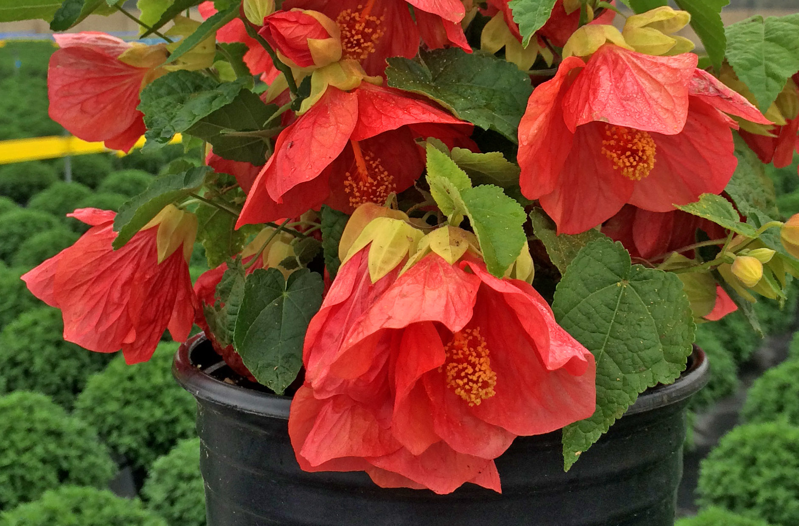
Abutilon
"Abutilon, also known as flowering maples, are beautiful flowering plants that
belong to the Malvaceae family. They are native to tropical and subtropical regions and are known
for their showy, bell-shaped flowers. Abutilon plants come in a variety of colors, including shades
of yellow, orange, and pink. They can be grown as both indoor and outdoor plants, adding a touch of
vibrancy to any garden or living space. If you're a fan of unique and colorful plants, Abutilon is
definitely worth considering! "
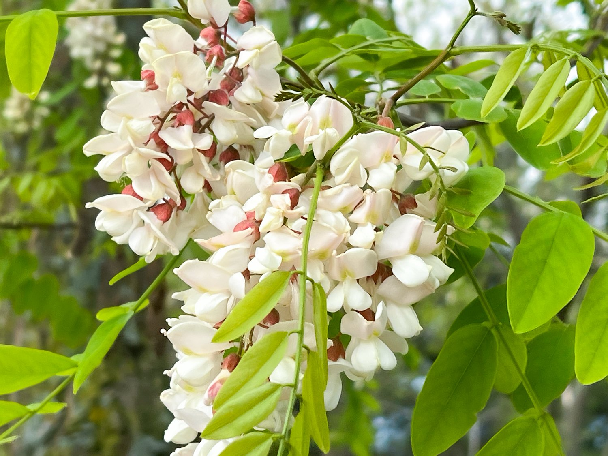
Acacia
"Acacia flowers are known for their delicate beauty and vibrant colors. They come
in various shades, including yellow, white, and pink, depending on the species. The flowers are
often arranged in clusters or spikes, creating a stunning display. Not only are they visually
appealing, but Acacia flowers also emit a lovely fragrance that attracts bees, butterflies, and
other pollinators."
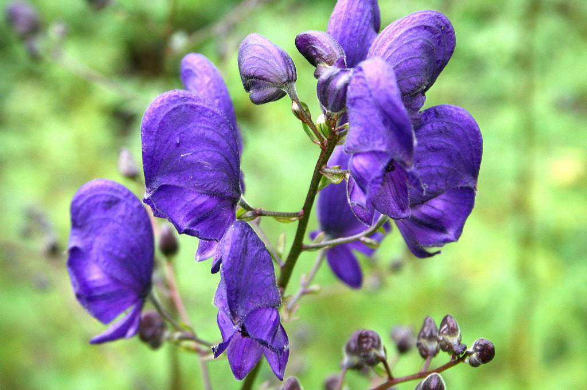
Aconite
"Aconite, also known as monkshood or wolfsbane, is a fascinating plant, It's a
beautiful but highly toxic flowering plant that belongs to the buttercup family. Aconite has been
used in traditional medicine for centuries, but it should be handled with extreme caution due to its
poisonous nature. The plant contains alkaloids that can be deadly if ingested or even touched.
Despite its toxicity, Aconite has also been used in some cultures for its medicinal properties,
particularly in small, controlled doses. It's important to be aware of the potential dangers
associated with this plant and to handle it with care."

Africa Daisy
"The Africa Daisy, also known as the Osteospermum, is a super pretty flower that's
found in Africa. It comes in lots of vibrant colors like purple, pink, and white. These daisies
bloom during the spring and summer and they add a burst of color to gardens and landscapes. They're
really tough and can grow in different climates, which is pretty cool. People love having Africa
Daisies in their gardens because they're so beautiful and they bring a touch of African charm. "
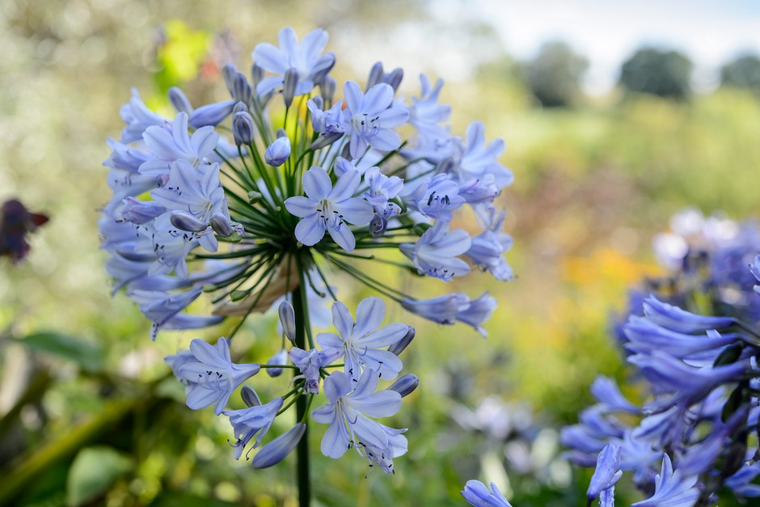
Agapanthus
"Agapanthus! Also known as the African Lily, it's a stunning flower that originates
from South Africa. Agapanthus blooms with clusters of beautiful trumpet-shaped flowers in shades of
blue, purple, or white. These flowers are known for their tall, slender stems and lush green
foliage. They thrive in sunny locations and can add a touch of elegance to any garden or floral
arrangement. Agapanthus is loved for its hardiness and ability to withstand various weather
conditions."
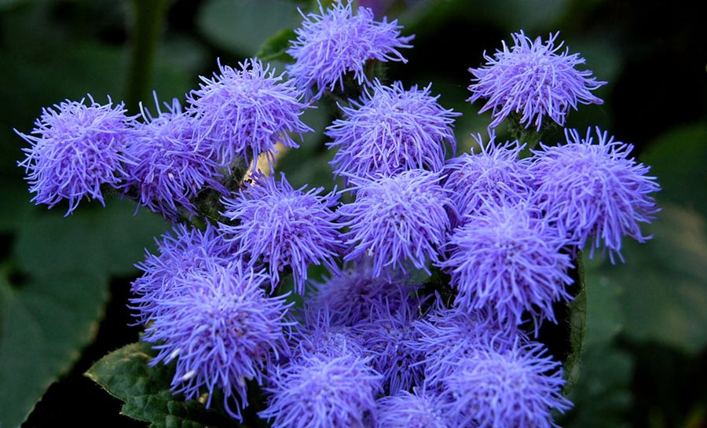
Ageratum
"It's a beautiful flower that comes in vibrant shades of blue, pink, and white.
Ageratum blooms in clusters and has a fluffy, pom-pom-like appearance. It's perfect for adding a pop
of color to any garden or flower arrangement. Plus, it attracts butterflies and bees, which is great
for the environment. Ageratum is also pretty low-maintenance, so it's a great choice for beginner
gardeners."
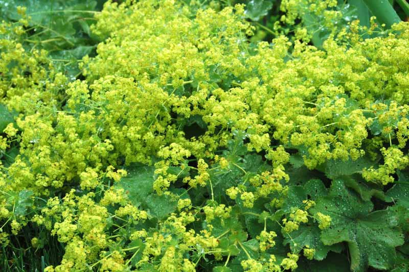
Alchemilla
"Alchemilla, also known as Lady's Mantle, is a lovely plant with delicate,
scalloped leaves. It's named Lady's Mantle because the leaves resemble the folds of a medieval
lady's cloak. Alchemilla produces small, yellow-green flowers that form clusters. One interesting
thing about alchemilla is that the leaves can hold droplets of water, creating a beautiful effect
after rain or dew. It's a popular choice for gardens because it's easy to grow and adds a touch of
elegance to any landscape."
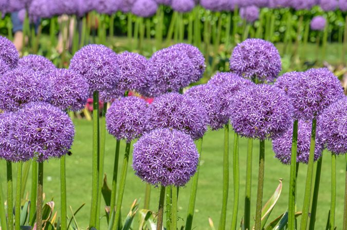
Allium
"Allium is a fabulous flower that comes in a variety of colors, including purple,
pink, and white. It's known for its unique globe-shaped blooms that sit atop tall, sturdy stems.
Alliums are a favorite among gardeners because they add a touch of whimsy and drama to any garden.
They also attract pollinators like bees and butterflies, which is great for the environment. Plus,
they're pretty low-maintenance and can thrive in a variety of soil conditions."
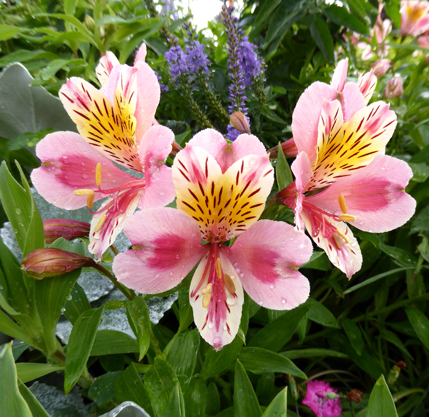
Alstroemeria
"Alstroemeria is such a stunning flower! It's commonly known as the Peruvian Lily,
and it comes in a wide range of colors like pink, purple, orange, and yellow. Alstroemeria has
beautiful, delicate petals with unique markings, and it blooms in clusters on long, sturdy stems.
One of the best things about Alstroemeria is that it has a long vase life, so it's perfect for
bouquets or floral arrangements. It's also a hardy plant that can withstand different weather
conditions, making it a great addition to any garden. "
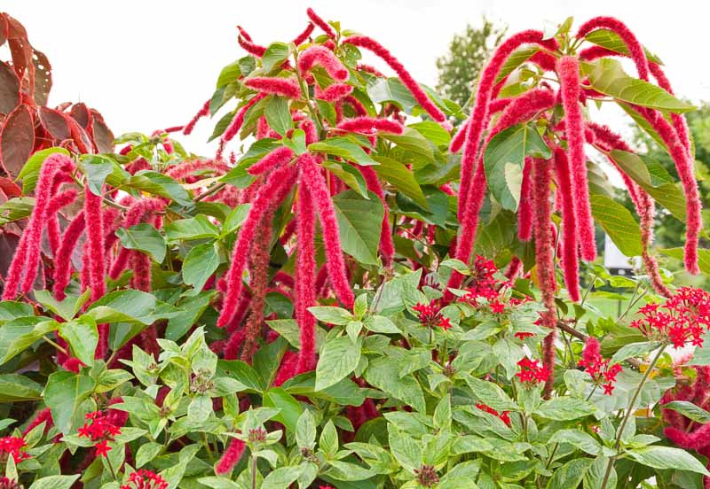
Amaranthus
"Amaranthus is such a cool plant! It's also known as "Love-Lies-Bleeding" or
"Tassel Flower." Amaranthus has long, drooping clusters of tiny flowers that resemble tassels or
cascading waterfalls. The flowers come in vibrant shades of red, pink, orange, and green. It's a
showstopper in any garden or floral arrangement! Amaranthus is also versatile and can be grown as
both an annual and a perennial. Plus, it's drought-tolerant and easy to care for. If you want to add
a touch of drama and beauty to your garden, definitely consider planting some Amaranthus!"
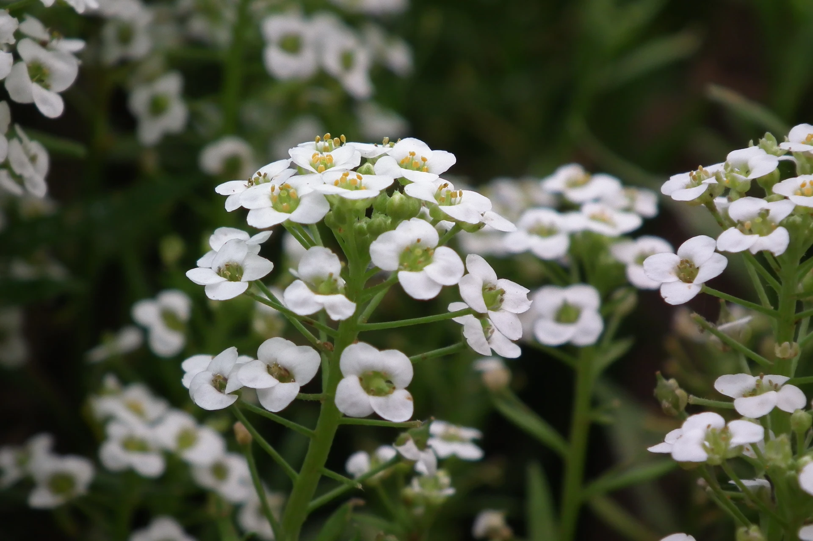
Alyssum
"Alyssum is an amazing flower! It's a small, delicate plant that produces clusters
of tiny, fragrant flowers. Alyssum comes in various colors like white, pink, and purple, and it has
a sweet, honey-like scent that attracts bees and butterflies. It's perfect for filling in gaps in
your garden or as a border plant. Alyssum is also low-maintenance and can tolerate different soil
conditions. Plus, it blooms for a long time, giving you continuous beauty throughout the season."
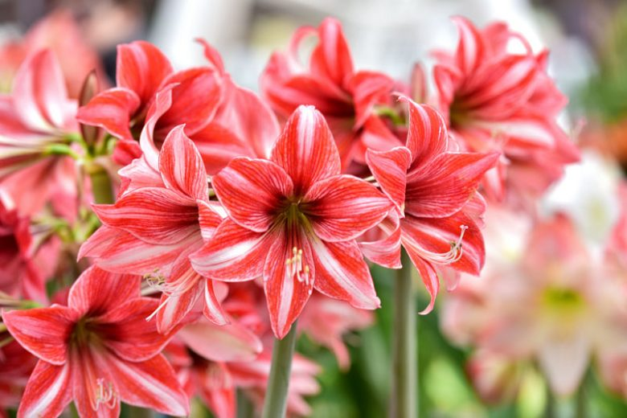
Amarllis
"Amarllis is such a stunning flower! It's known for its large, showy blooms that
come in a variety of colors like red, pink, white, and even striped or multicolored varieties.
Amarllis bulbs produce tall, sturdy stems that support these gorgeous flowers. They make a bold and
beautiful statement in any garden or indoor space. Amarllis is also a popular holiday plant, often
blooming during the winter months. With proper care, Amarllis can bloom year after year, bringing
joy and beauty to your surroundings."
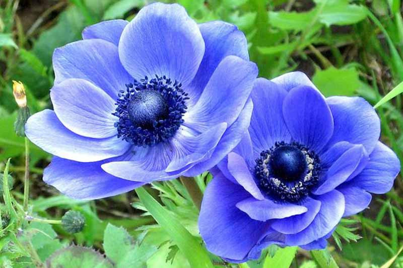
Anemone
"Anemone is such a beautiful flower! It has delicate petals that come in a variety
of colors like white, pink, purple, and blue. The petals are often fringed or ruffled, adding to
their charm. Anemones bloom in the spring and early summer, bringing a burst of color to gardens and
bouquets. They are also known for their resilience and can tolerate different soil types and weather
conditions. "

Anise Hyssop
"Anise Hyssop is such a fantastic plant! It's also known as Agastache or Licorice
Mint. It has beautiful spikes of purple or blue flowers that attract bees, butterflies, and
hummingbirds. The leaves of Anise Hyssop have a delightful fragrance, reminiscent of anise or
licorice, hence the name. Not only is it a stunning addition to any garden, but it's also edible!
You can use the leaves to make herbal teas or add them to salads and desserts for a unique flavor."

Armeria Maritima
"Armeria martima, also known as Sea Thrift or Sea Pink, is a lovely plant! It's a
perennial that grows in compact clumps and produces beautiful, globe-shaped clusters of pink or
white flowers on long, slender stems. Armeria martima is well-suited for coastal gardens or areas
with poor soil, as it is tolerant of salt and drought. It adds a pop of color and texture to any
garden, and its flowers attract butterflies and bees. With its low-maintenance nature and ability to
thrive in challenging conditions, Armeria martima is a wonderful choice for adding beauty to your
outdoor space! "
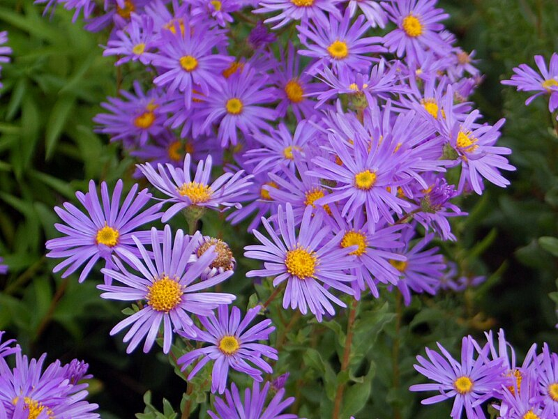
Aster
"Aster is such a beautiful flower! It comes in a variety of vibrant colors like
purple, pink, blue, and white. The petals of an aster are often daisy-like and arranged in a
star-shaped formation, which gives them their name. Asters bloom in the late summer and fall, adding
a burst of color to gardens and landscapes. They are also known for attracting butterflies and bees,
making them a great choice for pollinator gardens. With their cheerful and long-lasting blooms,
asters are a wonderful addition to any garden."
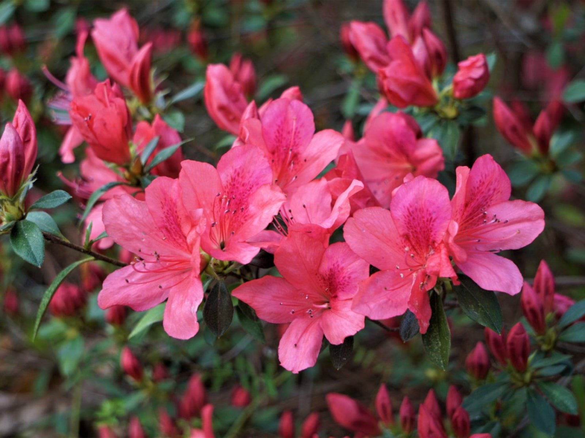
Azalea
"Azaleas are absolutely stunning! They are flowering shrubs that come in a wide
range of colors, including shades of pink, purple, red, and white. These vibrant blooms create a
beautiful display in gardens and landscapes. Azaleas are known for their showy flowers and glossy
green foliage. They typically bloom in the spring, adding a burst of color to the surroundings. With
their stunning flowers and variety of colors, azaleas are a popular choice for adding beauty and
charm to any outdoor space."

Angel's Trumpet
"Angel's Trumpet, also known as Brugmansia, is a beautiful flowering plant. It gets
its name from its unique trumpet-shaped flowers that hang downwards, resembling a trumpet played by
angels. The flowers come in various colors like white, yellow, pink, and peach, and they have a
lovely fragrance. But, did you know that Angel's Trumpet is also known for its toxicity? 🚫 It
contains powerful alkaloids that can be harmful if ingested, so it's important to admire its beauty
from a safe distance. Just be cautious and enjoy its enchanting allure! "

Baby's breath
"Baby's Breath, scientifically known as Gypsophila, is a delicate and dainty flower
often used as a filler in floral arrangements. It features clusters of tiny white or pink flowers
that create a soft and airy look. Baby's Breath is commonly associated with weddings and symbolizes
innocence and purity. It's a popular choice for bouquets and centerpieces due to its versatility and
ability to complement other flowers beautifully. Whether used on its own or paired with other
blooms, Baby's Breath adds a touch of elegance to any arrangement. "

Bachelor button
"Bachelor Button! Also known as Centaurea cyanus, Bachelor Button is a charming and
vibrant flower. It gets its name from the tradition of young bachelors wearing these flowers as a
buttonhole decoration. Bachelor Buttons have striking blue petals, although they can also be found
in shades of pink, white, and purple. These flowers are not only visually appealing but also attract
butterflies and bees, making them a great addition to any garden. They symbolize hope, love, and
purity. With their cheerful colors and easy-growing nature."
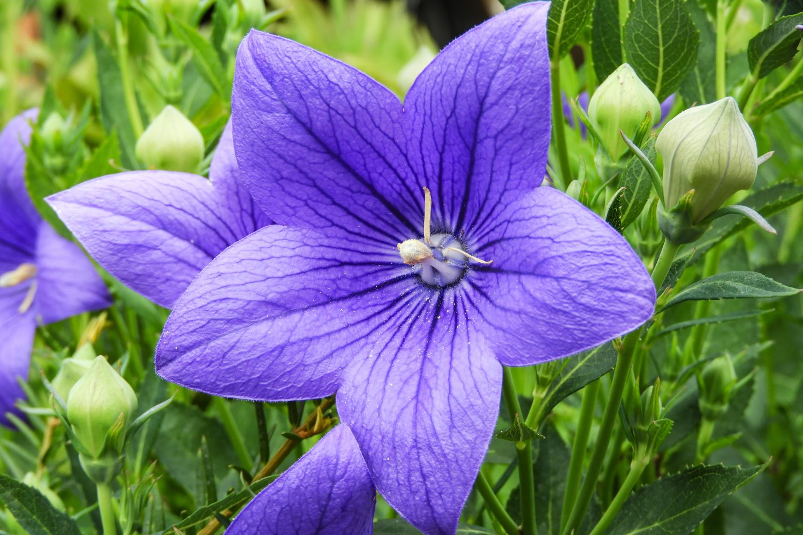
Balloon flower
"Balloon flowers, also known as Platycodon grandiflorus, are fascinating plants
that are sure to catch your attention. They get their name from their unique balloon-like buds that
swell up before blooming into beautiful star-shaped flowers. Balloon flowers come in various shades
of blue, pink, and white, adding a pop of color to any garden. One interesting thing about them is
that the flowers can actually change color as they age, which is pretty cool!"
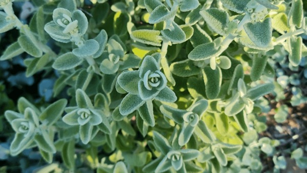
Ballota
"Ballota is a genus of flowering plants that belong to the mint family, Lamiaceae.
One popular species is Ballota acetabulosa, also known as the Greek Horehound. It's a lovely
perennial plant with small, tubular flowers in shades of pink or white. Ballota flowers are not only
visually appealing but also attract pollinators like bees and butterflies to your garden. These
plants are known for their aromatic foliage and are often used in herbal medicine for their
potential health benefits."

Brassica
"Brassica is a genus of plants that includes various types of flowers, such as
cabbage, broccoli, and mustard. These flowers are known for their vibrant colors and attractive
blooms. Brassica flowers can range in color from bright yellows to deep purples, adding a splash of
color to any garden. Not only are they visually appealing, but they also attract beneficial insects
like bees and butterflies. Plus, many Brassica flowers are edible and can be used in culinary
creations."

Bee Blam
"Bee Balm, also known as Monarda, is a stunning flower that attracts bees,
butterflies, and hummingbirds with its vibrant blooms and delightful fragrance. It comes in a
variety of colors, including shades of red, pink, purple, and white. Bee Balm is not only visually
appealing but also has medicinal properties. It has been used in traditional herbal medicine for its
soothing and calming effects. This resilient flower is a great addition to any garden, providing
beauty, pollinator support, and potential health benefits. "
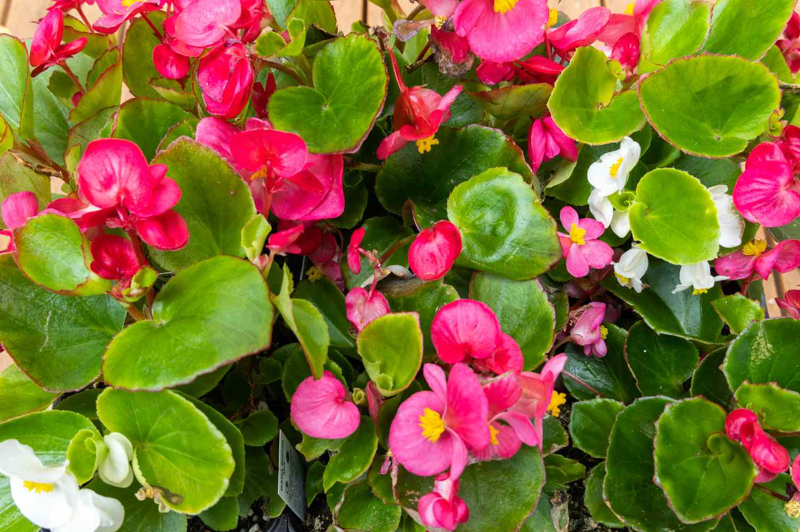
Begonia
"Begonias are absolutely lovely flowers that come in a wide array of colors,
including shades of pink, red, orange, and white. They have beautiful, asymmetrical petals that add
a touch of elegance to any garden or floral arrangement. Begonias are known for their versatility,
as they can thrive in both indoor and outdoor settings. These resilient flowers are relatively
low-maintenance and can tolerate a range of conditions, making them a popular choice among
gardeners."
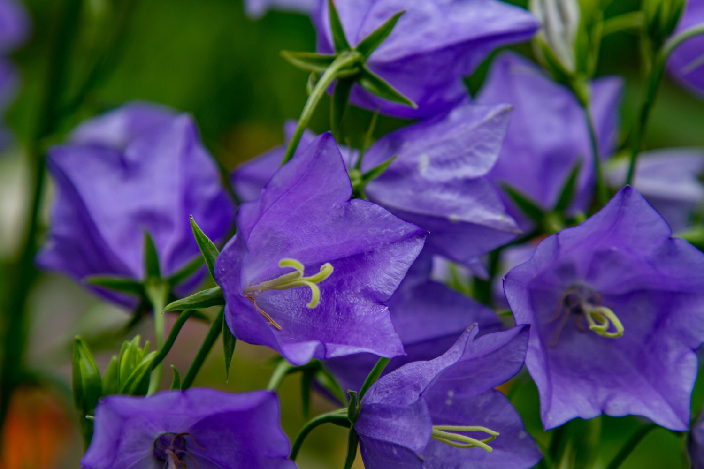
Bell flower
"Bell Flowers, also known as Campanula, are absolutely delightful. They get their
name from their bell-shaped blooms, which come in various colors like blue, purple, pink, and white.
These charming flowers add a touch of whimsy and elegance to any garden or floral arrangement. Bell
Flowers are known for their resilience and adaptability, making them a popular choice among
gardeners. They can thrive in both sunny and shady areas, and some varieties even bloom throughout
the summer."
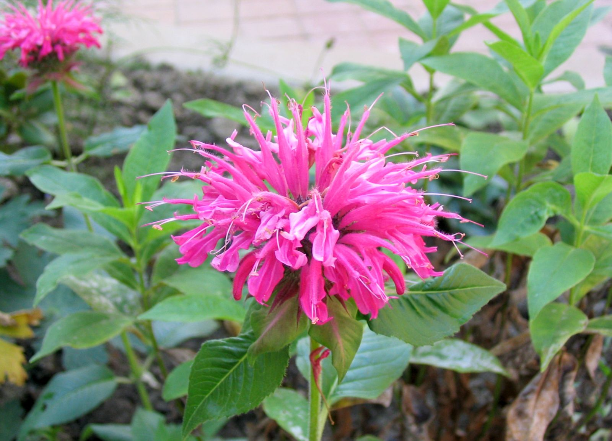
Bergamot
"Bergamot, also known as Bee Balm or Monarda, It's a member of the mint family and
is known for its vibrant blooms and delightful fragrance. Bergamot flowers come in shades of red,
pink, purple, and white, attracting bees, butterflies, and hummingbirds to your garden. Not only is
it visually appealing, but it also has medicinal properties and can be used in herbal teas and
remedies."
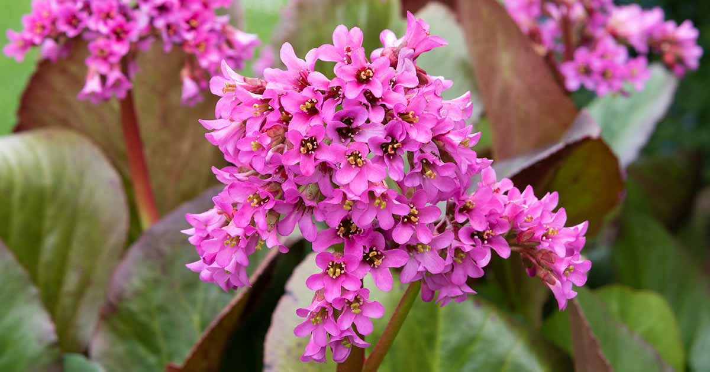
Bergenia
"Bergenia is a beautiful flowering plant that you might find interesting, It is
also known as "elephant's ears" due to the large, round leaves it produces. The flowers of Bergenia
are usually pink or purple, and they bloom in early spring, adding a splash of color to gardens.
These plants are quite resilient and can tolerate a range of conditions, making them a popular
choice for gardeners. With their unique foliage and charming flowers, Bergenia can certainly make a
statement in any garden or landscape. "
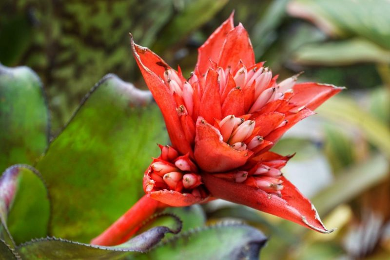
Billbergia
"Billbergia is a fascinating genus of flowering plants that you might be interested
in, These plants belong to the bromeliad family and are known for their stunning and unique flowers.
Billbergia flowers come in a variety of vibrant colors like red, orange, and purple, adding a
tropical touch to any garden or indoor space. They are relatively low-maintenance and can thrive in
different conditions, making them a popular choice for plant enthusiasts. So, if you're looking for
a distinctive and eye-catching plant, Billbergia is definitely worth considering!"
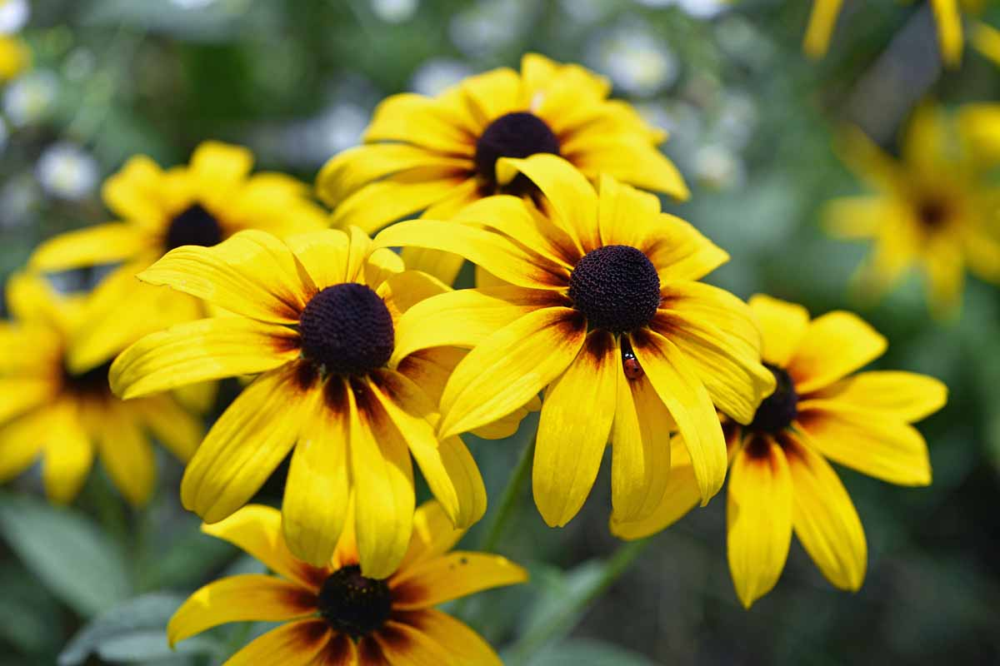
Black Eyed Susan
"Black Eyed Susans, also known as Rudbeckia, are absolutely stunning. These
cheerful blooms feature bright yellow petals with a dark brown or black center, resembling a pair of
eyes. They are native to North America and are known for their resilience and ability to attract
pollinators like bees and butterflies. Black Eyed Susans are perfect for adding a pop of color to
gardens, borders, or wildflower meadows. "

Blanket flower
"Blanket flowers also known as Gaillardia, These vibrant blooms feature a
combination of red, orange, and yellow petals, creating a stunning display of color. Blanket flowers
are native to North and South America and are known for their ability to attract butterflies and
bees to the garden. They are also quite resilient and can withstand hot and dry conditions, making
them a great choice for low-maintenance gardens. So, if you're looking for a flower that adds a
burst of color and attracts pollinators, blanket flowers are a fantastic option! "

Blazing star
"Blazing star, also known as Liatris, These tall and elegant blooms feature vibrant
spikes of purple, pink, or white flowers that add a touch of vertical beauty to any garden or floral
arrangement. Blazing star is native to North America and is known for its ability to attract
butterflies and bees. It's a great choice for adding height and color to your garden, and its unique
appearance is sure to make a statement. So, if you're looking for a show-stopping flower, Blazing
star is definitely worth considering! "

Bleading heart
"Bleeding Heart, also known as Dicentra, is a captivating flower that you might be
interested in.These delicate blooms have a unique heart-shaped appearance with drooping petals that
resemble tears, hence the name "Bleeding Heart." They come in shades of pink, white, and red, adding
a touch of elegance to any garden or floral arrangement. Bleeding Heart is known for its romantic
and sentimental symbolism, making it a popular choice for weddings and special occasions. So, if
you're looking for a flower that evokes emotions and beauty, Bleeding Heart is a wonderful choice!"
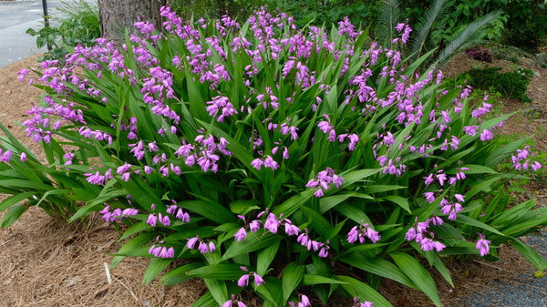
Bletilla
"Bletilla, also known as the Chinese ground orchid, These stunning orchids feature
delicate, colorful blooms in shades of pink, purple, and white. Bletilla is native to East Asia and
is known for its resilience and ability to thrive in a variety of conditions. They are a popular
choice for gardeners who want to add a touch of exotic beauty to their gardens. So, if you're
looking for a unique and captivating flower, Bletilla orchids are definitely worth considering! "

Blue eyed Grass
"Blue Eyed Grass, also known as Sisyrinchium, is a beautiful flower. These charming
blooms feature petite blue or purple petals with a yellow center, resembling little blue eyes.
Despite its name, Blue Eyed Grass is not actually a grass but belongs to the iris family. It is
native to North America and is known for its ability to attract butterflies and bees. Blue Eyed
Grass is perfect for adding a pop of color to your garden or even as a charming addition to floral
arrangements. So, if you're looking for a dainty and eye-catching flower, Blue Eyed Grass is a
fantastic choice! "

Blue Star
"Blue Star Flower, also known as Amsonia, These lovely blooms feature delicate
clusters of star-shaped flowers in shades of blue, creating a mesmerizing display. Blue Star Flower
is native to North America and is known for its resilience and ability to thrive in a variety of
conditions. It's a great choice for adding a touch of elegance and color to your garden. "
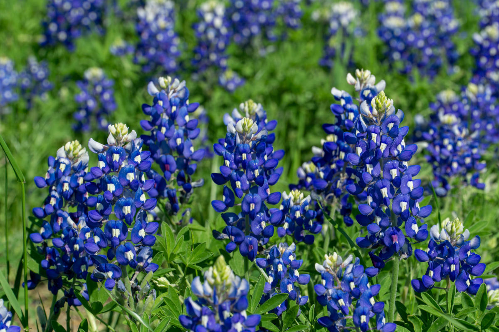
Bluebonnet
"Bluebonnet is a real Texan treasure, y'all! These vibrant wildflowers are the
state flower of Texas and are known for their gorgeous blue blooms that blanket the fields in the
spring. Bluebonnets symbolize the spirit and beauty of the Lone Star State. They're a favorite sight
during wildflower season, attracting visitors from near and far. So, if you ever find yourself in
Texas, be sure to take a stroll and admire the breathtaking beauty of Bluebonnets. They're a true
icon of the Texas landscape!"
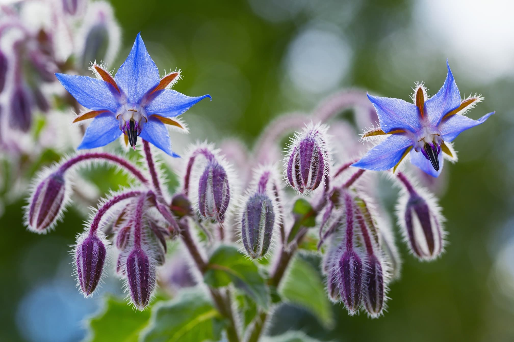
Borage
"Borage flower also known as the "starflower," is a delightful plant with vibrant
blue flowers. It's a favorite among gardeners for its beautiful blooms and its ability to attract
pollinators like bees. Borage is not only visually appealing but also has culinary and medicinal
uses. Its leaves and flowers are often used in salads, teas, and garnishes. Plus, it's said to have
various health benefits. So, if you're looking to add a touch of beauty and flavor to your garden,
Borage is definitely worth considering! "
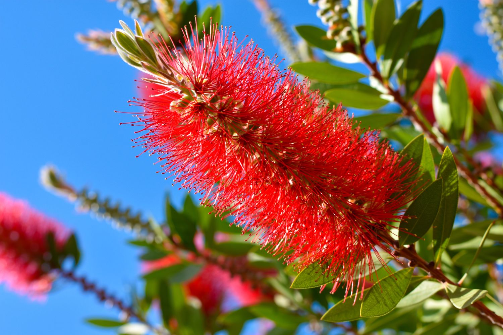
Bottlebrush
"Bottlebrush, also known as Callistemon, is a unique and eye-catching plant with
vibrant, bottlebrush-like flower spikes. These flowers come in various colors, including red, pink,
and yellow, and they attract hummingbirds and butterflies. Bottlebrush plants are native to
Australia but are also grown in many other parts of the world. They're known for their hardiness and
ability to tolerate different soil conditions."
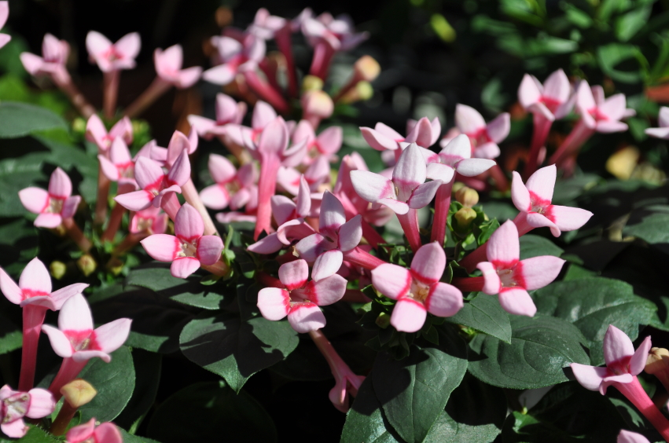
Bouvardia
"Bouvardia is a lovely flower that comes in a variety of colors, including white,
pink, and red. These beautiful blooms are known for their delicate, star-shaped petals and their
sweet fragrance. Bouvardia is often used in floral arrangements and bouquets due to its elegance and
long-lasting nature. It's a popular choice for weddings and special occasions. So, if you're looking
to add a touch of charm and beauty to your floral arrangements, Bouvardia is a wonderful option! "
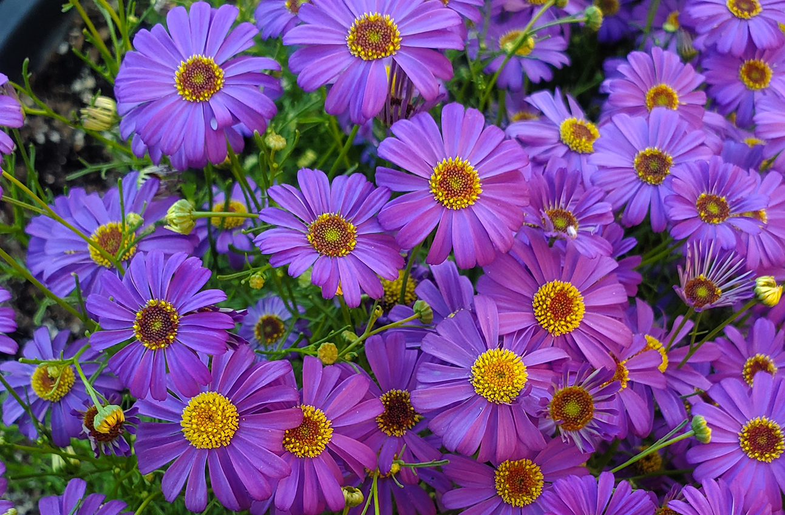
Brachyscome
"Brachyscome, also known as the Swan River Daisy, is a delightful flower that hails
from Australia. It's known for its dainty, daisy-like blooms that come in a variety of colors,
including shades of blue, pink, and white. Brachyscome is a popular choice for garden borders,
containers, and hanging baskets due to its compact size and prolific flowering. It's a
low-maintenance plant that adds a pop of color to any garden or landscape. "
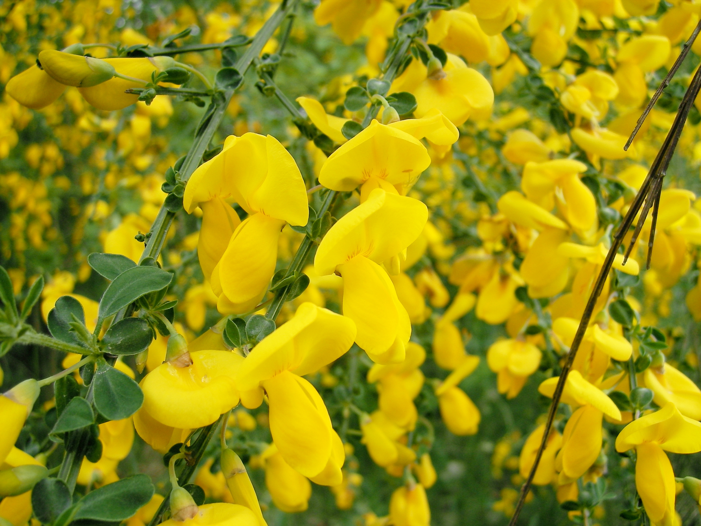
Broom
"Broom flower, also known as Cytisus, is a beautiful plant with vibrant yellow
flowers. It's a member of the legume family and is native to Europe and North Africa. Broom flowers
are known for their cheerful blooms and delicate fragrance. They're often used in gardens and
landscapes to add a burst of color and charm. Broom flowers are also loved by bees and butterflies,
making them a wonderful choice for pollinator-friendly gardens. So, if you're looking to brighten up
your outdoor space, broom flower is definitely worth considering!"
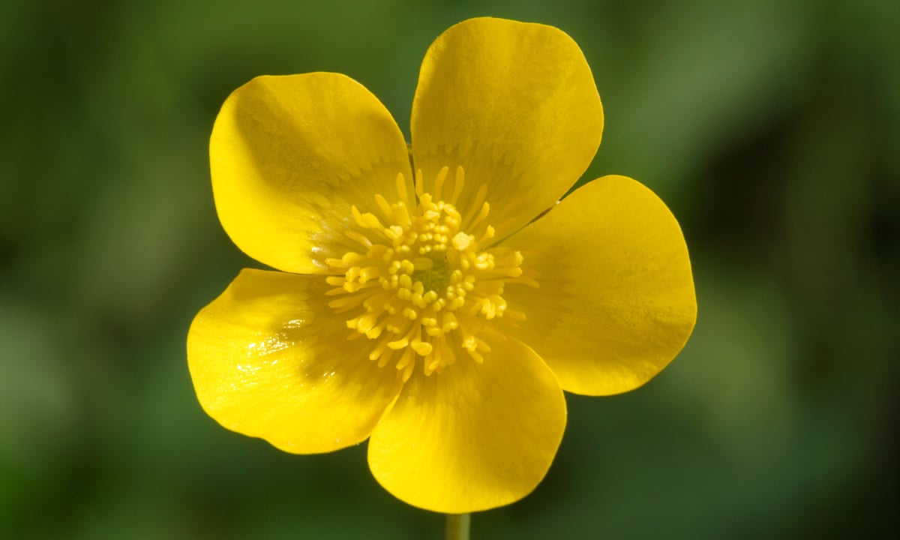
Buttercup
"Buttercup, also known as Ranunculus, is a lovely flower with bright yellow petals
that resemble little cups of butter. They are known for their cheerful and vibrant appearance,
adding a pop of color to gardens and bouquets. Buttercups are also found in various other colors,
such as white, pink, and red. These flowers symbolize joy and happiness, making them a perfect
addition to any floral arrangement. So, if you're looking to bring a touch of sunshine and beauty to
your garden, buttercups are a fantastic choice!"

Butterfly bush
"Butterfly bush, also known as Buddleja, is a beautiful flowering shrub that
attracts butterflies with its fragrant and nectar-rich flowers. These bushes come in a variety of
colors, including shades of purple, pink, and white. Butterfly bushes are a favorite among gardeners
due to their ability to create a fluttering haven for butterflies and other pollinators. They're
also relatively low-maintenance and can thrive in various soil conditions. "
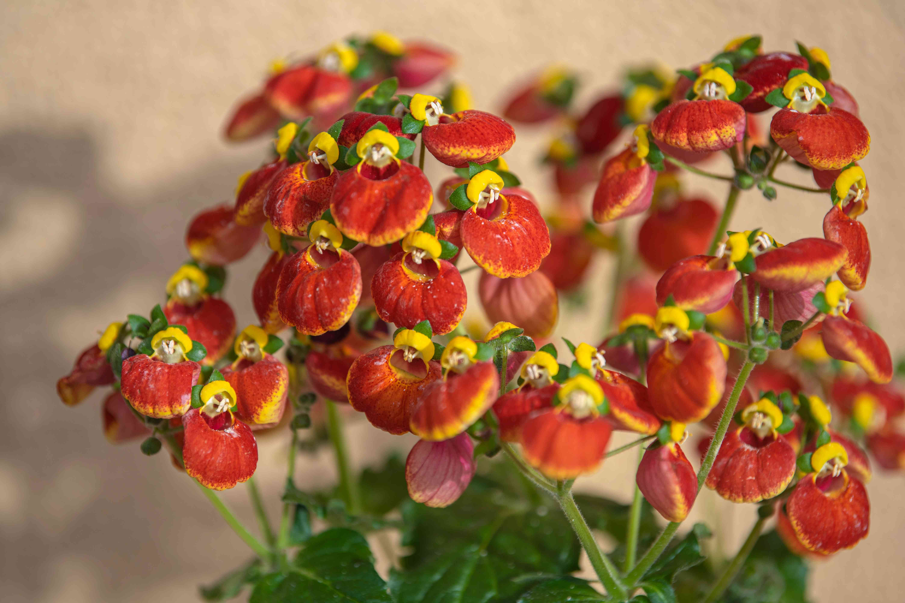
Calceolaria
"Calceolaria, also known as Slipper Flower, is a fascinating plant with unique,
pouch-like flowers. These flowers resemble little slippers, hence the name. They come in a variety
of vibrant colors, such as yellow, orange, red, and purple. Calceolaria plants are native to South
America and are known for their showy blooms. They can add a pop of color and charm to any garden or
indoor space. The flowers are quite eye-catching and can be a great conversation starter."
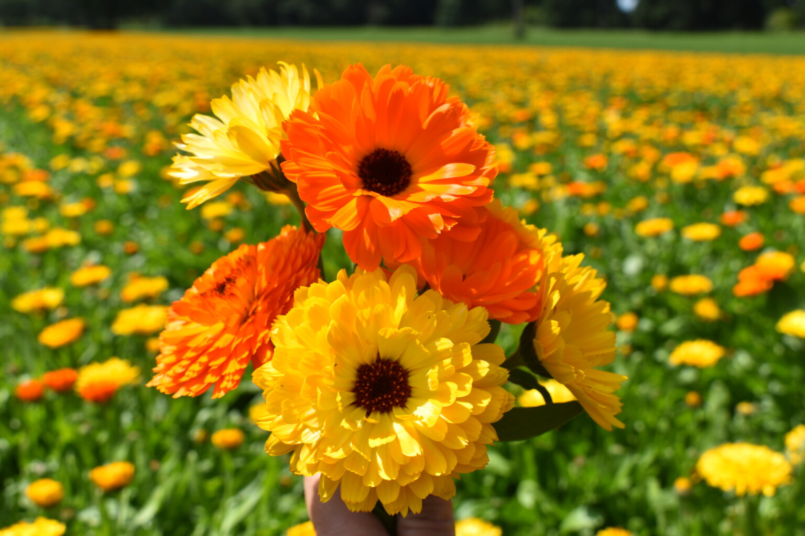
Calendula
"Calendula, also known as marigold, is a beautiful and versatile flower that blooms
in vibrant shades of yellow and orange. It has a long history of medicinal and culinary uses.
Calendula petals can be used to make soothing balms, creams, and teas that are believed to have
anti-inflammatory and healing properties. In the garden, calendula is a hardy and low-maintenance
plant that attracts beneficial insects like bees and butterflies. Its cheerful blooms can brighten
up any space and make a lovely addition to flower arrangements."

California poppy
"California poppies are such a delight! They are beautiful wildflowers native to
California, known for their vibrant orange and golden blooms. These poppies are famous for creating
stunning displays of color across meadows and hillsides. They have become an iconic symbol of the
state's natural beauty. California poppies are also quite resilient and can thrive in a variety of
environments. They are low-maintenance and can add a cheerful touch to any garden or landscape."

Calla Lily
"They're absolutely stunning! Calla Lilies are known for their elegant,
trumpet-shaped blooms and come in various colors like white, pink, and yellow. They symbolize purity
and beauty, making them a popular choice for weddings and special occasions. These flowers are
native to southern Africa and are known for their long-lasting blooms. They also have a unique
feature where their leaves are heart-shaped, which adds to their charm. Calla Lilies are definitely
a beautiful addition to any garden or floral arrangement!"
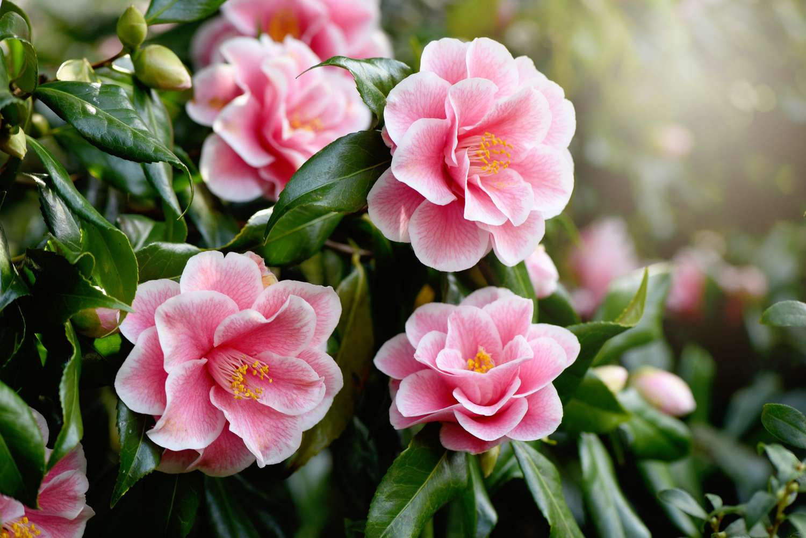
Camellia
"Camellias are absolutely stunning! They have these gorgeous, showy flowers in
different colors like pink, red, and white. They're known for their elegant and graceful appearance.
Camellias are often associated with love and admiration, and they make for beautiful gifts or
decorations. These flowers have a certain charm and allure that captivates anyone who sees them.
Whether you're a fan of their vibrant colors or their delicate petals, Camellias are definitely a
sight to behold. "
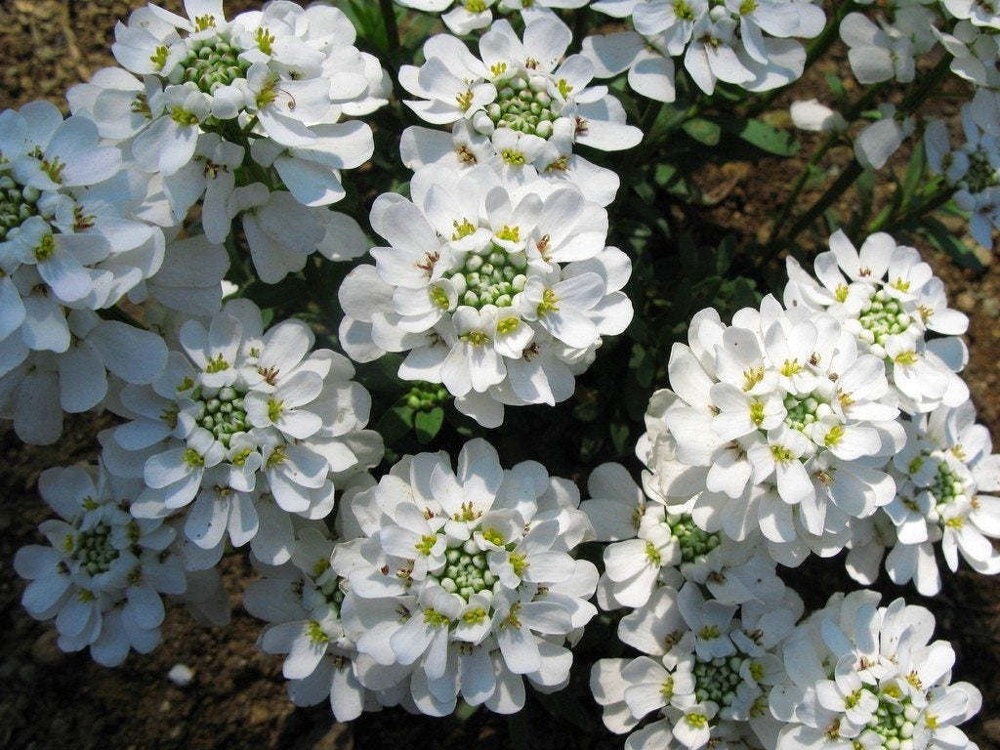
Candytuft
"Candytufts are beautiful flowers that come in clusters of small, delicate blooms.
They are available in shades of white, pink, and lavender. Candytufts are known for their sweet
fragrance and are often used in floral arrangements. They can add a touch of charm and elegance to
any setting. These flowers are also low-maintenance and resilient, making them a great choice for
gardens and landscaping. "

Canna Lily
"Canna lilies are absolutely stunning! They come in vibrant colors like red,
orange, yellow, and pink, just like the flowers you mentioned before. These lilies have large, showy
blooms that add a tropical touch to any space. They're known for their resilience and
low-maintenance nature, making them a popular choice for flower lovers. Whether you're planting them
in a garden or enjoying them as potted plants, Canna lilies are sure to bring beauty and joy with
their vibrant colors and striking appearance."

Cape Leadwort
"Cape leadwort, also known as Plumbago auriculata, is a beautiful flowering plant.
It has clusters of delicate, sky-blue flowers that add a touch of elegance to any garden or
landscape. Cape leadwort is native to South Africa and is known for its ability to attract
butterflies with its nectar-rich blooms. It's a versatile plant that can be grown as a shrub or
trained as a vine. Whether you're looking to add a pop of color or attract pollinators to your
garden, Cape leadwort is definitely worth considering! "
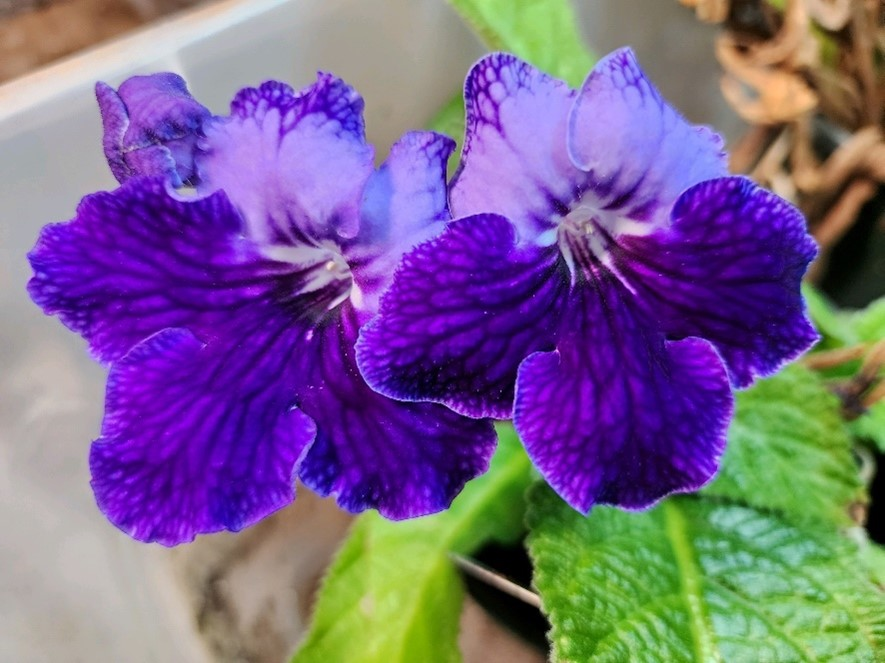
Cape Primrose
"Cape primrose, also known as Streptocarpus, is a lovely flowering plant native to
South Africa. It features delicate, trumpet-shaped flowers in various colors, including shades of
purple, pink, and white. Cape primroses are known for their ability to thrive in indoor
environments, making them popular houseplants. They have attractive foliage and can add a splash of
color to any room. With their charming blooms and easy-care nature, Cape primroses are a delightful
choice for plant enthusiasts."
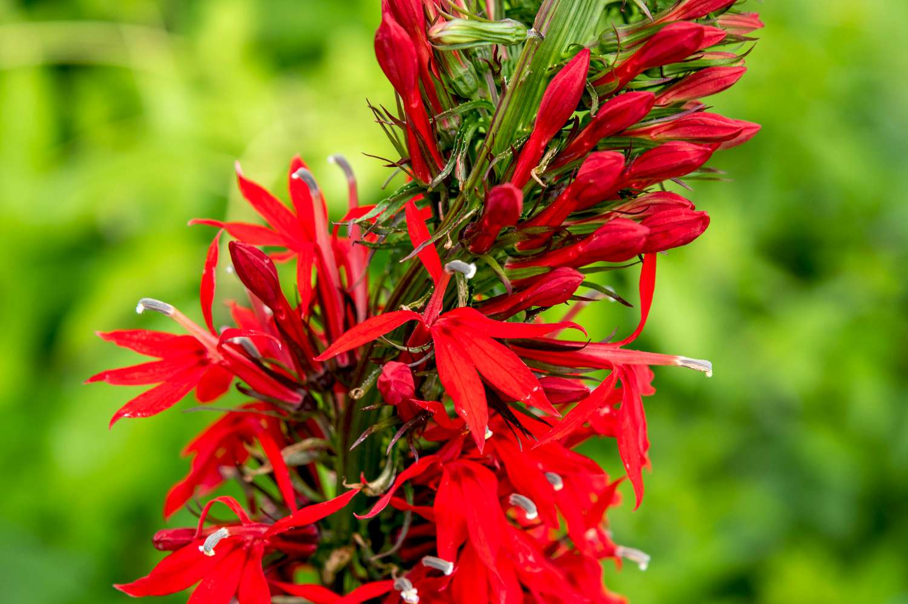
Cardinal
"Cardinal flowers, also known as Lobelia cardinalis, are stunning perennials native
to North America. They are named after their vibrant red blooms, which resemble the robes of
Catholic cardinals. These flowers are a favorite among hummingbirds and butterflies due to their
nectar-rich blossoms. Cardinal flowers can add a pop of color to any garden or landscape with their
tall, upright stems and striking red flowers. They prefer moist soil and partial shade, making them
a great choice for gardens with those conditions."
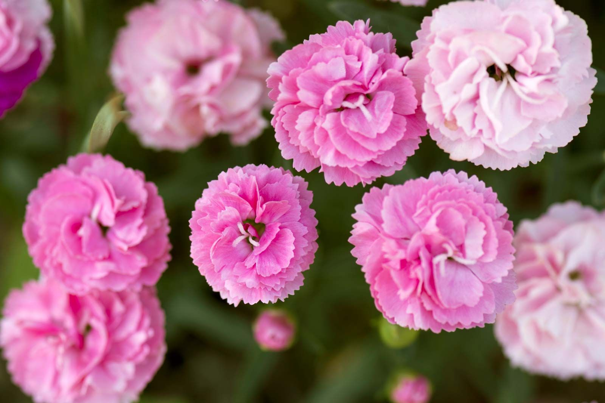
Carnation
"Carnations, also known as Dianthus, are lovely and versatile flowers that come in
a variety of colors. They are known for their ruffled petals and sweet fragrance. Carnations are
often used in bouquets and floral arrangements due to their long-lasting nature. These flowers
symbolize love, fascination, and distinction, and are popular choices for special occasions like
weddings and Mother's Day. Whether you're looking for a classic red carnation or a vibrant pink or
white one, these flowers are sure to add beauty and charm to any floral display."
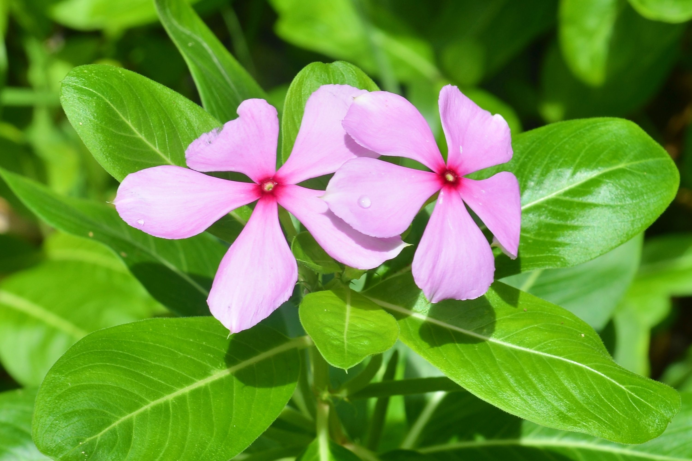
Catharanthus
"Catharanthus, also known as Vinca, is a beautiful flower that comes in various
colors like pink, white, and purple. It's known for its small, delicate blooms and glossy green
leaves. Catharanthus is a low-maintenance flower that can thrive in both sunny and partially shaded
areas. It's often used in garden beds, borders, and containers to add a pop of color. The best part
is that Catharanthus is native to Madagascar and is quite resilient and can withstand heat and
drought conditions."
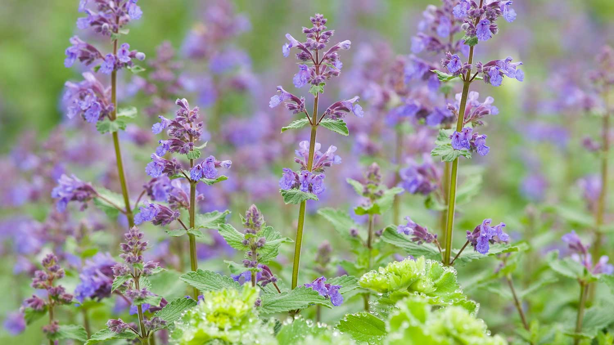
Catmint
"catmint flowers are absolutely delightful! They're known for their vibrant
purple-blue blooms and their sweet, minty fragrance. Catmint, also known as Nepeta, is a
low-maintenance perennial that attracts butterflies and bees to your garden. It's a great choice if
you want to add a pop of color and attract pollinators. Plus, it's super easy to grow! Catmint is
also known for its calming properties and is often used in herbal remedies. So not only does it look
beautiful, but it can also help create a peaceful atmosphere. "
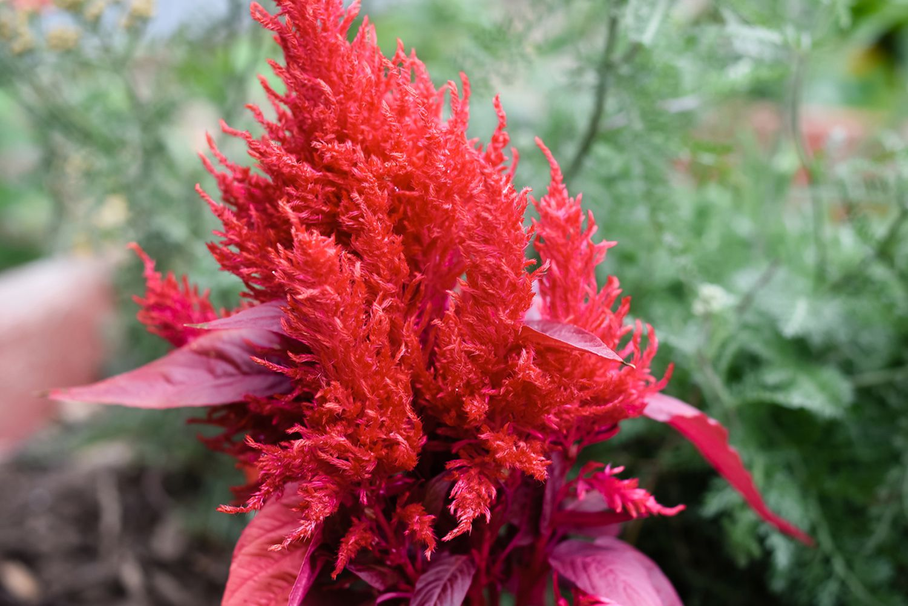
Celosia
"Celosia flowers are known for their unique and eye-catching appearance. The blooms
have a distinct shape, resembling a flame or a brain, depending on the variety. They come in vibrant
colors like red, orange, yellow, and even shades of pink and purple. These flowers make a bold
statement in floral arrangements and bouquets, adding a touch of drama and beauty."

Cerastium Tomentosum
"Cerastium tomentosum, also known as Snow-in-Summer, is a lovely and resilient
flower. It's a low-growing perennial with silver-gray foliage and delicate white flowers that
blanket the plant, creating a stunning contrast. This flower is known for its ability to withstand
heat and drought, making it a great choice for gardens with challenging conditions. It's also a
favorite among pollinators like bees and butterflies. With its soft, silvery appearance and
abundance of delicate blooms, Cerastium tomentosum adds a touch of beauty and charm to any garden."
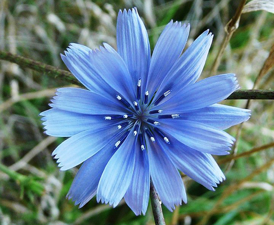
Chicory
"Chicory is a fascinating flower! It's known for its vibrant blue color and
daisy-like blooms. Did you know that Chicory has a long history of culinary and medicinal uses? The
leaves can be used in salads, while the roots can be roasted and ground as a coffee substitute. It's
also believed to have various health benefits, such as aiding digestion and supporting liver health.
Chicory flowers are a favorite among pollinators, attracting bees and butterflies to your garden. So
not only is it beautiful, but it also serves an important role in supporting our ecosystem. "
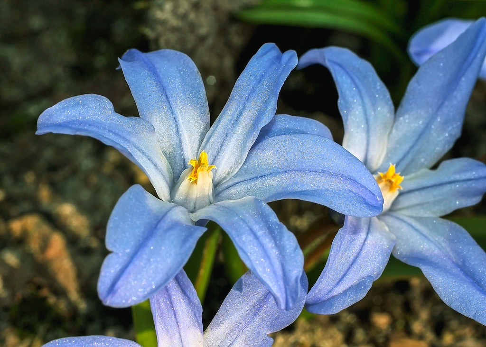
Chionodoxa
"Chionodoxa is a delightful flower! Also known as Glory-of-the-Snow, it's a small
but mighty bulb flower that blooms in early spring. The star-shaped flowers come in shades of blue,
pink, and white, creating a carpet of color in gardens and landscapes. Chionodoxa is perfect for
naturalizing, meaning it can spread and create a beautiful display over time. These flowers are also
deer-resistant, making them a great choice for areas with wildlife."
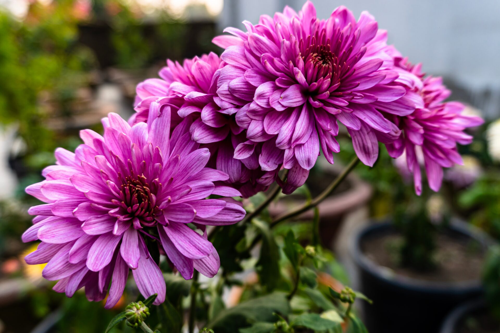
Chrysanthemum
"Chrysanthemums, also know as "mums" are absolutely gorgeous! They come in a wide
array of colors, including vibrant yellows, rich oranges, and deep purples. Mums are known for their
beautiful, full blooms and are often associated with autumn. These flowers symbolize joy, love, and
longevity, making them a popular choice for special occasions and celebrations. Whether you're
looking to brighten up your garden or create a stunning floral arrangement, Chrysanthemums are a
fantastic choice."
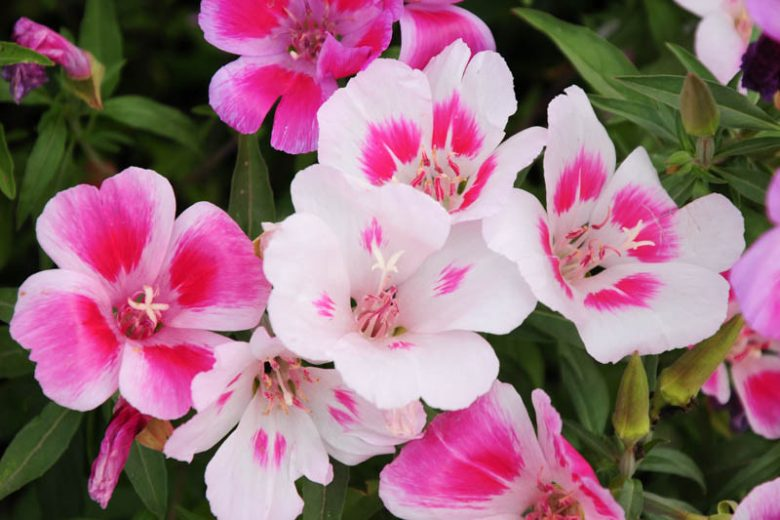
Clarkia
"Clarkia is a lovely flower! It's known for its delicate, papery petals and vibrant
colors like pink, purple, and white. Clarkia flowers have a graceful and airy appearance, adding a
touch of elegance to any garden or bouquet. These flowers are also a favorite among pollinators like
bees and butterflies, making them a great choice for supporting local ecosystems. If you're looking
to add a splash of color and beauty to your garden, Clarkia is definitely worth considering. Its
charming blooms are sure to make you smile! "
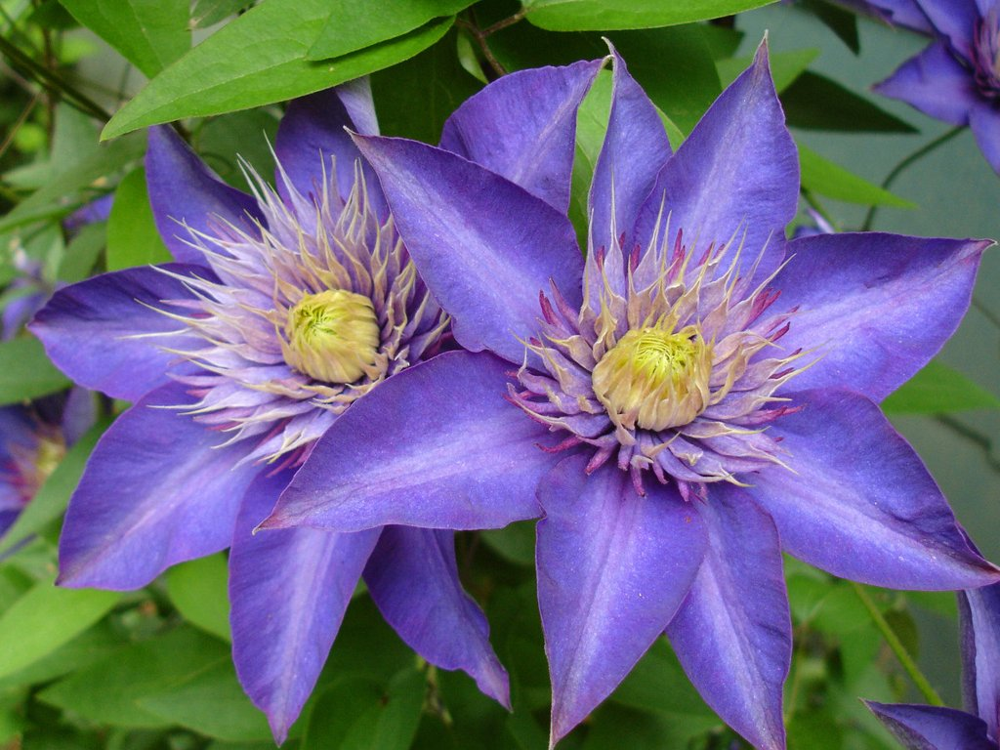
Clematis
"Clematis! They're such stunning flowers! Clematis is a beautiful vine that
produces an abundance of colorful blooms. They come in various shades like purple, pink, white, and
even yellow. Clematis flowers have a unique shape with multiple petals that create a lovely
star-like appearance. They're perfect for adding a touch of elegance to any garden or trellis. Plus,
they're pretty low-maintenance too! Just give them some sunlight, well-drained soil, and a little
support to climb, and they'll reward you with their gorgeous blooms."
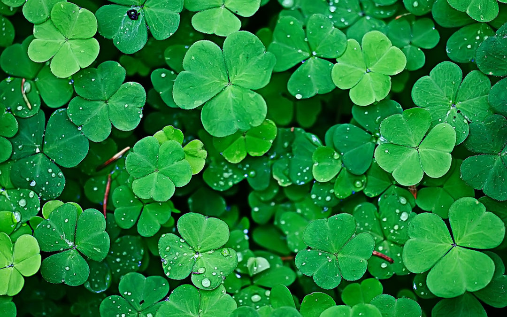
Clover
"Clover! It's such a charming little plant! Clover is known for its distinctive
three-leafed shape, and finding a four-leafed clover is considered lucky! It's a common sight in
meadows and lawns, and it adds a touch of greenery to any space. Clover is also a favorite of bees,
as it produces nectar-rich flowers that attract these buzzing creatures. Did you know that there are
different types of clover, like white clover and red clover? They're not only beautiful but also
beneficial for the soil, as they fix nitrogen and improve its fertility. "
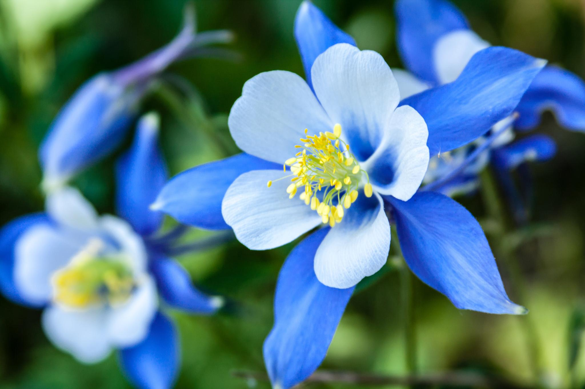
Columbine
"Columbine, also known as Aquilegia, is a perennial plant that produces unique and
intricate blooms. The flowers have delicate, spurred petals that come in a variety of colors like
purple, pink, white, and blue. They have a whimsical and graceful appearance, almost like little
ballet dancers in the garden. 🩰 Columbine flowers are also loved by hummingbirds and butterflies,
making them a delightful addition to any pollinator garden."
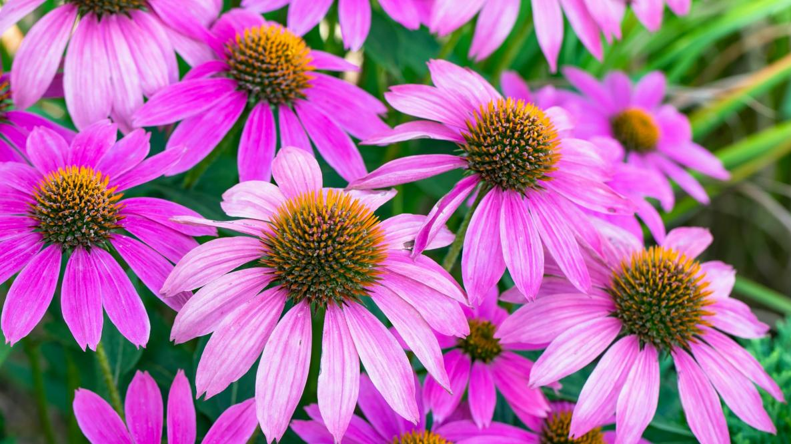
Coneflower
"They're absolutely stunning! Coneflowers, also known as Echinacea, are perennial
flowers that are native to North America. They have vibrant, daisy-like blooms with a cone-shaped
center, which gives them their distinctive name. Coneflowers come in a variety of colors, including
shades of pink, purple, and white. Not only are they beautiful, but they also attract butterflies
and bees to the garden with their nectar-rich flowers. Coneflowers are also known for their
medicinal properties and are often used in herbal remedies."

Coral Bells
"They are such stunning perennials with their unique foliage and delicate
bell-shaped flowers. Coral bells, also known as Heuchera, come in a wide range of colors, from
vibrant reds and purples to soft pinks and greens. They add a beautiful splash of color and texture
to any garden or landscape. What's great about coral bells is that they are quite versatile and can
thrive in both sun and shade. Plus, they are low-maintenance, making them a perfect choice for
gardeners of all levels. "

Coral Vine
"Coral Vine is such a lovely flowering vine! It's also known as Antigonon leptopus
and it's famous for its beautiful clusters of delicate pink or white flowers. This vine can add a
touch of elegance to any garden or trellis. Coral Vine is known for its fast growth and ability to
attract butterflies and hummingbirds, making it a delightful addition to any wildlife-friendly
garden. It's a low-maintenance plant that thrives in warm climates, so if you're looking for a
stunning vine to enhance your outdoor space, Coral Vine is definitely worth considering! "
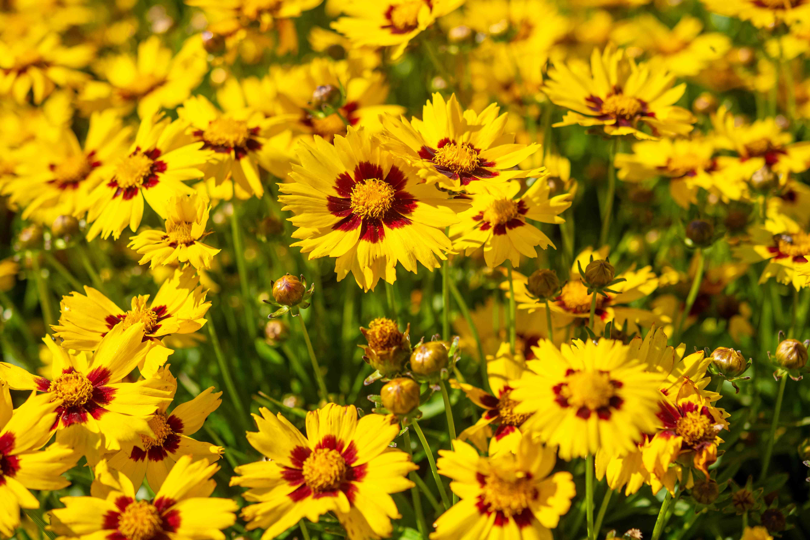
Coreopsis
"These cheerful and bright flowers are known for their vibrant yellow, orange, and
red blooms. Coreopsis is a low-maintenance perennial that adds a burst of color to any garden or
landscape. They are also great for attracting butterflies and bees, making them a wonderful choice
for pollinator gardens. Coreopsis is quite versatile and can thrive in various soil conditions, from
sandy to clay. "
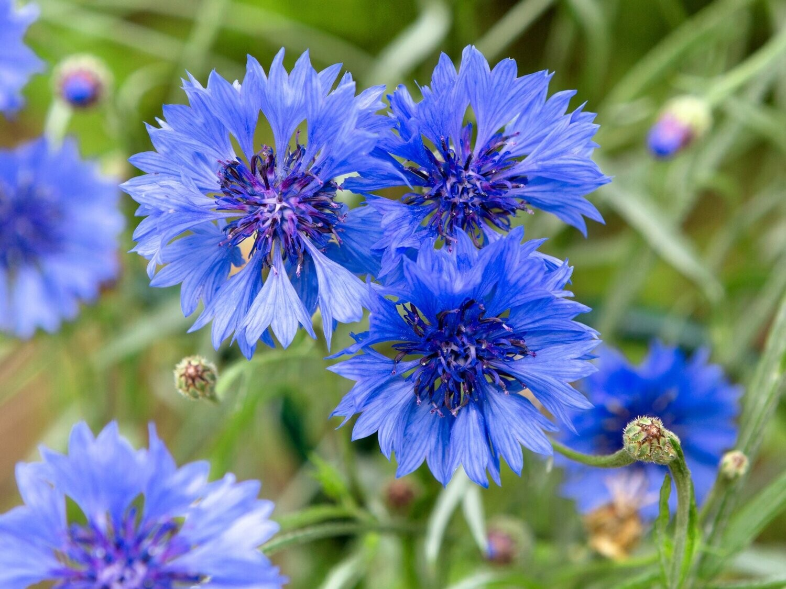
Cornflower
"Cornflowers are simply delightful! These charming flowers, also known as Centaurea
cyanus, are known for their vibrant blue color, although they can also be found in shades of pink,
white, and purple. Cornflowers have a classic, wildflower look and can add a touch of natural beauty
to any garden or bouquet. They are quite easy to grow and can tolerate a variety of soil conditions.
Not only are cornflowers visually stunning, but they also attract bees and butterflies, making them
a great choice for pollinator gardens."
Corydalis
"Corydalis is a fascinating flower! These delicate and graceful plants belong to
the Papaveraceae family and are known for their unique, spurred flowers. Corydalis flowers come in a
variety of colors, including shades of pink, purple, and yellow. They add a touch of elegance to any
garden or landscape. Corydalis plants are typically perennial and prefer shady, woodland
environments. They are also loved by pollinators like bees and butterflies."
Cosmos
"Cosmos flowers are absolutely stunning! These beautiful annual flowers come in a
variety of vibrant colors, including shades of pink, white, and orange. Cosmos flowers have a
daisy-like appearance with delicate, feathery foliage. They are known for their ability to attract
butterflies and bees, making them a wonderful addition to any pollinator garden. Cosmos flowers are
also quite easy to grow and can thrive in a wide range of soil conditions."
Cotoneaster
"Cotoneaster is a fascinating plant! These shrubs or small trees belong to the
Rosaceae family and are known for their attractive foliage and colorful berries. Cotoneaster plants
come in various species, each with its own unique characteristics. They are often valued for their
ability to provide year-round interest in the garden, with flowers in spring and berries in autumn.
Cotoneasters are also loved by birds, as the berries serve as a food source. "
Corocosmia
"Corcosmia, also known as Montbretia, is a beautiful flower that stands out with
its tall, arching stems and clusters of vibrant, trumpet-shaped blooms. The flowers come in shades
of orange, red, and yellow, creating a striking display of color. They have a unique and
eye-catching appearance that can really liven up a garden. Corcosmia is native to South Africa but
has been widely cultivated and can be found in gardens and landscapes around the world. "
Crocus
"They're one of the earliest signs of spring, popping up with their vibrant colors
after a long winter. Crocus flowers have these delicate, cup-shaped blooms in shades of purple,
yellow, white, and even striped varieties. They're quite small but make a big impact when they
carpet the ground with their cheerful colors. You can find crocus flowers in gardens, parks, and
even natural areas. They're like little bursts of joy, signaling the arrival of warmer days and
bringing a sense of renewal and beauty to the world."
Crown imperial
"Crown-imperial is such a majestic flower! It's known for its tall stems and
impressive clusters of bell-shaped blooms that hang down like a crown. The flowers come in vibrant
shades of orange, red, and yellow, making them really stand out in the garden. Crown-imperial is
native to the Middle East, but it can be found in gardens around the world. It's a real showstopper
and adds a touch of regal beauty to any landscape."
Cuckoo
"Cuckoo flower also known as Lady's Smock, is a lovely wildflower that blooms in
the spring. It's called Cuckoo flower because it often coincides with the arrival of cuckoos in the
area. This delicate flower has clusters of pale pink or lilac petals that create a soft and ethereal
look. Cuckoo flower is native to Europe and can be found in damp meadows, marshes, and along stream
banks. It's a favorite of butterflies and bees, adding a touch of beauty and providing vital nectar
for pollinators."

Cyclamen
"Cyclamen is such a stunning flower! It has these beautiful, upswept petals that
come in shades of pink, white, and purple. Cyclamen flowers have a unique shape and texture, with
their petals curving backward and their centers adorned with intricate patterns. They're perfect for
adding a touch of elegance and charm to any garden or indoor space. Cyclamen is known for its
resilience and ability to thrive in cool temperatures, making it a popular choice for fall and
winter displays."

Daffodil
"The daffodil is a classic spring flower that has long been associated with renewal
and new beginnings. Its bright yellow petals and sunny disposition are a welcome sight after a long
winter. This resilient flower thrives in a variety of conditions, making it a popular choice for
gardens and bouquets alike. With its cheerful disposition and long-lasting blooms, the daffodil is
sure to brighten any space."
Dahiia
"The dahlia is a vibrant and versatile flower that has been captivating gardeners
for centuries. With its large, showy blooms in a wide range of colors, the dahlia is a popular
choice for flower arrangements, and its lush, full foliage makes it a standout in any garden. Native
to Mexico and Central America, the dahlia is a hardy perennial that can thrive in a variety of
climates. While its flowers are short-lived, the dahlia's rich, jewel-toned hues and lush, full form
make it a favorite among flower lovers."
Daisy
"The humble daisy is a cheerful, low-maintenance flower that is loved for its
simplicity and grace. Its small, white petals are surrounded by a ring of yellow centers, giving it
a sunny, cheerful appearance. While the daisy may not be as showy as other flowers, its delicate
beauty and ability to thrive in a variety of conditions make it a popular choice for gardens and
bouquets alike. Whether in a field or a vase, the daisy's simple charm is sure to bring a smile."
Dandelion
"The dandelion may be considered a weed by some, But its cheerful yellow blooms and
feathery seed heads are a sight to behold. Though often unwanted in lawns and gardens, the dandelion
is actually a valuable plant that provides food and habitat for a variety of insects. Its flowers
provide nectar for bees and butterflies, while its leaves are a favorite food of rabbits and deer.
And its sturdy taproot helps to aerate and improve the soil. So, while the dandelion may not be
welcome in every garden, it is a beneficial and beautiful part of nature."
Daphne
"The daphne is a fragrant shrub that is loved for its delicate, bell-shaped flowers
and heady, sweet scent. Native to Europe, Asia, and North Africa, the daphne has long been prized
for its fragrant blooms and evergreen foliage. Its small, tubular flowers are borne in clusters and
range in color from white to pink to deep purple. While the daphne is a beautiful addition to any
garden, it is also highly toxic, so care should be taken when handling the plant. Still, its sweet
scent and delicate blooms make it a worthy addition to any garden. "

Daylily
"The daylily is a hardy perennial that is loved for its long blooming season and
wide range of colors. Also known as "ditch lilies," daylilies can be found in a variety of shades,
including yellow, orange, red, pink, purple, and white. In addition to their beauty, daylilies are
also prized for their durability and easy care. These low-maintenance plants are drought-tolerant
and can thrive in a variety of soil conditions. And while each individual bloom only lasts for a
day, each plant produces many flowers, making them a favorite of gardeners."
Decumaria
" Decumaria barbara is a deciduous vine native to the southeastern United States.
Also known as the wild yam vine, it is a member of the Dogbane family. Decumaria can grow up to 30
feet tall and has dense foliage with glossy, dark green leaves. It produces small, yellow-green
flowers in the spring that are followed by dark purple fruits. Decumaria is popular among gardeners
for its unique appearance and its ability to climb and cover walls or fences. It prefers moist soil
and full sun to partial shade."
Delphinium
"Delphinium is a genus of flowering plants in the buttercup family. They are
commonly known as larkspurs and are native to temperate regions of the Northern Hemisphere.
Delphinium are perennials that grow 1 to 2 meters tall, with spiky, dark green leaves and erect
stems bearing clusters of flowers in a variety of colors, including blue, pink, purple, red, and
white. The plant blooms from late spring to midsummer and attracts bees, butterflies, and
hummingbirds. Delphinium are grown for their ornamental value and as cut flowers."

Desert Rose
"Desert rose, scientifically known as Adenium obesum, is a succulent plant native
to the Arabian Peninsula and East Africa. It is also known as impala lily, kudu lily, mock azalea,
and Sabi star. It is characterized by its unique, fleshy trunk and swollen base, which can store
water during periods of drought. The flowers of the desert rose are pink, red, or white, and they
bloom from spring to summer. The desert rose is a popular ornamental plant and is also grown for its
medicinal properties."
Deutzia
"Deutzia is a genus of flowering shrubs in the hydrangea family. The most common
species, Deutzia scabra, is native to China and Japan, but there are dozens of cultivars grown
around the world. Deutzia shrubs are prized for their delicate, bell-shaped flowers, which bloom in
spring and summer. Depending on the variety, the flowers can be white, pink, purple, or yellow.
Deutzia shrubs are easy to grow and make an excellent addition to any garden. They can be grown in
the ground or in containers, and require minimal care once established."
Dianella
"Dianella is a genus of perennial herbs, also known as flax lilies, that are native
to Australia, Asia, and New Zealand. The most common species is Dianella caerulea, which is also
known as the blueberry lily or blue flax lily. This species grows up to 3 feet tall and produces
showy blue flowers. The flowers are followed by small, edible blue fruits. Dianella is a popular
ornamental plant for its attractive foliage and flowers.It is also used in landscape design and
erosion control."
Dianthus Barbatus
"Dianthus barbatus, also known as sweet William, is a species of flowering plant in
the carnation family. It is native to the Mediterranean region and has been introduced to many parts
of the world. Sweet William is a biennial or short-lived perennial plant that grows to about 2 feet
tall. The flowers are typically pink, red, or white and have a strong, clove-like fragrance. The
plant blooms in early summer and attracts bees and butterflies. Sweet William is widely grown as a
cut flower and is also popular in cottage gardens."
Diascia
" Diascia is a genus of flowering plants in the figwort family, native to South
Africa. They are sometimes known as twinspur or twinspur diascia. The most well-known species is
Diascia barberae, which is commonly grown as an ornamental plant. Diascia flowers are small, but
they come in a wide variety of colors, including white, pink, purple, and orange. They are often
used in rock gardens and containers, as they are low-growing and compact. Diascia are also known for
attracting bees, butterflies, and hummingbirds."
Dietes
"Dietes, also known as African iris, is a genus of flowering plants in the iris
family, native to southern Africa. The most well-known species is Dietes grandiflora, also known as
the African iris or yellow iris. Dietes are rhizomatous perennials that can grow up to 3 feet tall.
They produce large, showy flowers that come in a variety of colors, including white, yellow, orange,
and purple. The flowers are often attractive to bees and butterflies. Dietes are commonly used in
landscaping and are also popular as cut flowers."
Dill
" Dill is an annual herb in the parsley family, native to the Mediterranean region.
It is commonly grown as a culinary herb and for its seed, which is used as a spice. Dill has been
cultivated for thousands of years and has been used medicinally as well as for culinary purposes.
The herb is easy to grow and is often used in pickling and as a garnish. Dill is also a host plant
for the swallowtail butterfly, and its flowers are attractive to bees. The herb has a distinctive
flavor that is often described as sweet and slightly bitter."
Disa
"The disa, or Disa uniflora, is a species of orchid native to southern Africa. It
is also known as the pride of Table Mountain, due to its prevalence in the area around Table
Mountain in South Africa. Disas are epiphytic orchids, meaning they grow on other plants instead of
in the ground. They are often found growing on trees or rocks, with their roots exposed to the air.
Disas have long, delicate petals and sepals that can be white, pink, purple, or yellow. They are
pollinated by a variety of insects, including bees, flies, and beetles. In addition to their beauty,
disas have an interesting relationship with ants. The ants harvest nectar from the flowers and in
return, they help to spread the plant's seeds. This symbiotic relationship is known as
"myrmecochory". Disas are easy to cultivate and are popular among orchid enthusiasts. They can be
grown in pots or mounted on wooden slabs to replicate their natural growing conditions."

Dutch Iris
"Dutch iris, or Iris × hollandica, is a hybrid iris developed from two other iris
species: I. × germanica and I. × florentina. Dutch iris are widely cultivated for their showy
flowers, which come in a wide range of colors, including blue, purple, white, yellow, and pink.
Dutch iris are perennials that typically bloom in spring, but can also bloom in fall in warm
climates. The flowers are typically large and showy, with delicate petals and a prominent center.
Dutch iris are relatively easy to grow and make an excellent addition to any"
Echium
" Also known as the viper's bugloss is a biennial flowering plant with dramatic
blue flowers. Native to the Mediterranean region, it thrives in hot, dry climates. The viper's
bugloss grows to about 3 to 5 feet tall, with narrow, lance-shaped leaves and tall, dramatic flower
spikes. It blooms in early summer, attracting bees and other pollinators. After flowering, the plant
produces small, nut-like seeds that are attractive to birds. The plant is also known for its
medicinal properties and has been used to treat a variety of ailments. "
Echinops
" Also known as the globe thistle is a showy perennial with unique blue flowers,
spiny foliage, and is drought-tolerant. It is a member of the sunflower family, and attracts bees,
butterflies, and other pollinators. It prefers full sun and well-drained soil. The globe thistle is
native to Europe and Asia, and can also be grown as a cut flower. "
Elder
"The elderberry is a fast-growing shrub that is native to North America, Europe,
and Asia. It can grow up to 20 feet tall and wide, and has clusters of small, cream or white flowers
that bloom in spring. The flowers are followed by clusters of dark purple berries in late summer.
The berries can be eaten raw or cooked, and are used to make jams, pies, and wines. The elderberry
also has a variety of medicinal uses, including as a cold and flu remedy. The plant is a valuable
source of food and medicine for wildlife, including birds, mammals, and insects."

English Bluebell
"The English bluebell is a wildflower native to the United Kingdom. It grows to
about one foot tall and has nodding, bell shaped, deep blue flowers with a sweet fragrance. The
flowers bloom in early spring and are pollinated by bees. The English bluebell is considered an
endangered species due to habitat loss and hybridization with the Spanish bluebell, which is a more
aggressive plant. The English bluebell is often found in woodlands and hedgerows, and is protected
by law in the UK. The plant has been used medicinally to treat various ailments, and has also been
used in folklore and superstition."
Epimedium
"Epimedium, also known as barrenwort or horny goat weed, is a genus of flowering
plants native to China and Japan. The plant is most commonly known for its medicinal properties,
particularly its use in traditional Chinese medicine. The Epimedium genus includes over 50 species,
each with their own unique characteristics. The plants typically have heart-shaped leaves and small,
delicate flowers in shades of white, pink, or purple. Some species are known for their ability to
spread quickly, while others are more slow-growing. The plants are typically low-maintenance and can
tolerate a variety of conditions, including partial shade and poor soil."
Eremurus
"Eremurus, also known as foxtail lily or desert candle is a genus of flowering
plants native to the Middle East, Central Asia, and the Mediterranean region. The plants are
characterized by their tall, narrow stems and clusters of star-shaped flowers in shades of white,
yellow, pink, or red. Some species can grow up to 8 feet tall, making them a striking addition to
any garden. Eremurus prefers well-drained soil and full sun, and is drought-tolerant once
established. The plants are popular with pollinators such as bees and hummingbirds. They are also
deer-resistant, making them a good choice for gardens where deer are a problem."
Erica
"Erica, also known as heather, is a genus of flowering plants native to Europe,
Asia, and Africa. There are over 800 species of Erica, including both evergreen and deciduous
plants. Most species are small shrubs, ranging in size from a few inches to several feet tall. The
plants have small, needle-like leaves and small flowers that are typically white, pink, or purple.
Many species of Erica are used in landscaping, as they are easy to grow and maintain. They are also
popular as cut flowers and as groundcover plants."
Erigeron
"Erigeron, also known as fleab Aby, is a genus of flowering plants in the aster
family. The plants are found throughout the world, but are particularly common in North America and
Europe. They typically have small, daisy-like flowers with yellow centers and petals in shades of
white, pink, or purple. The leaves are often small and narrow, with a toothed or serrated edge. Some
species of Erigeron are used as ornamental plants, while others are considered weeds. Some species,
such as Erigeron philadelphicus, are used medicinally for their anti-inflammatory properties."
Euphorbia
"Is a large and diverse genus of plants that includes over 2,000 species, ranging
from small annuals to large trees. The most well-known species is the poinsettia, also known as the
Christmas flower. Other common species include the pencil cactus, crown of thorns, and spurge. Most
Euphorbia species are characterized by their unique, milky sap, which is often toxic. The plants are
popular in landscaping, as they are often drought-tolerant and low-maintenance. They can be used as
groundcover, hedges, or in rock gardens."
Eustoma
" Eustoma, also known as lisianthus, is a genus of flowering plants native to North
America and Mexico. The plants are typically small and shrubby, with long, narrow leaves. They are
known for their beautiful, funnel-shaped flowers, which come in a variety of colors, including
white, pink, purple, and blue. The flowers are often used in bouquets and floral arrangements, as
they are long-lasting and come in a wide range of colors. The plants are also popular in rock
gardens and as groundcover. Some species of Eustoma are also used medicinally. "
Evening primrose
"Evening primrose, also known as Oenothera, is a genus of flowering plants in the
evening primrose family. The plants are native to North and South America, and are often found in
prairies, meadows, and along roadsides. They are known for their showy, yellow flowers, which open
in the evening and close in the morning. The flowers are followed by seed pods that split open to
reveal the seeds. Some species of evening primrose, such as Oenothera biennis, have been used
medicinally to treat a variety of conditions, including arthritis, eczema, and premenstrual
Syndrome. Evening primrose oil, extracted from the seeds of the plant, is a popular supplement that
is rich in essential fatty acids. The seeds are also edible and are used in recipes, including
breads, desserts, and salad dressings. In addition to its culinary and medicinal uses."
Feverfew
"Feverfew, also known as bachelor's buttons, is a small, daisy-like flower native
to the Mediterranean region. It is widely used in herbal medicine, and has been traditionally used
to treat fevers, headaches, and other ailments. The plant is also known for its ability to repel
insects, and is often used in gardens as a companion plant. Feverfew is a low-maintenance plant, and
thrives in sunny conditions."
Firethorn
"Firethorn, also known as pyracantha, is a genus of ever green shrubs native to
Asia and Europe. The plants are characterized by their dense, thorny foliage and bright red berries.
Firethorns are popular as ornamental plants, and can be used as hedges or barriers. They are also
known for their ability to attract birds and other wildlife. The berries of firethorns are edible,
but caution should be used as they can be poisonous if not properly prepared."

Flaming Katy
" Flaming katy, also known as kalanchoe, is a succulent plant native to Madagascar.
It is characterized by its thick, fleshy leaves and brightly colored flowers, which often range from
pink to red to yellow. Flaming katy is a popular houseplant due to its low maintenance requirements
and ability to thrive in dry conditions. The plant is also known for its ability to bloom in low
light, making it ideal for indoor gardens. However, care should be taken to ensure that the plant
does not get too much direct sunlight, as this can cause the leaves to burn. "

Flannel Flower
"Flannel flower, also known as actinotus helianthi, is a native plant of Australia.
It gets its name from its soft, velvety leaves, which feel like flannel to the touch. The flowers of
flannel flower are white, and bloom in spring and summer. The plant is popular in gardens and as a
cut flower. Flannel flower is also known for its medicinal properties, and has been used to treat a
variety of ailments. The plant is also known to be resistant to drought, making it a popular choice
for gardens in dry climates. "

Flax Flower
" Flax flower, also known as linum, is a herbaceous plant native to Europe and
Asia. It is best known for its blue or white flowers, which are often used to make dye. The plant is
also grown for its fibers, which are used to make linen fabric. In addition to its use as a textile,
flax has also been used medicinally. The seeds of the plant contain omega-3 fatty acids, and the oil
can be used as a food supplement. Flax flowers bloom in summer, and are pollinated by bees. The
plant is easy to grow, and prefers sunny conditions. "

Flowering Dogwood
" Flowering dogwood, also known as cornelian cherry, is a small tree native to
North America. It is known for its beautiful white or pink flowers, which bloom in spring. The
flowers are followed by clusters of red or purple berries, which are popular with birds. The tree is
also known for its attractive bark and foliage, which turns red in the fall. The flowering dogwood
is a popular ornamental tree, and can be found in parks and gardens throughout North America. The
tree can also be used as a food source, as the berries and young leaves are edible. "
Forget Me Not
" Forget me not, also known as myosotis, is a small perennial flower native to
Europe and Asia. It is characterized by its tiny blue flowers, which are often used as a symbol of
remembrance. The flower is easy to grow, and can be found in gardens and along streams and ponds. It
is also known as a "wish flower", as it is said that if you make a wish while holding the flower, it
will come true. Forget me not flowers are also associated with friendship, loyalty, and love. They
bloom in spring and summer, and are a favorite of bees and butterflies. "
Forsythia
" Forsythia, also known as golden bells, is a deciduous shrub native to Asia. It is
known for its showy yellow flowers, which bloom in early spring before the leaves emerge. The
flowers are followed by long, narrow leaves that turn yellow in the fall. Forsythia is a popular
ornamental plant, and can be trained into a hedge or used as a specimen plant. It is also used as a
cut flower, and is often found in bouquets. Forsythia is easy to grow, and prefers well-drained soil
and full sun. It can tolerate a range of soil types, and is drought-tolerant once established. "

Four O’clock
" Four o'clock flowers have a variety of common names, including Marvel of Peru and
beauty of the night. The plant is known for its impressive, colorful blooms, which have a
distinctive, long and tubular shape. The flowers of four o'clock plants come in a range of shades,
including red, yellow, orange, purple, and pink. Four o'clock plants are pollinated by hummingbirds
and moths, and are often grown as a border plant or in containers. "
Foxglove
"Foxglove flower is an interesting plant, with a variety of uses. The plant has
been used in traditional medicine for centuries, and is the source of the drug digitalis. The plant
is also known for its beauty, with tall spikes of bell-shaped flowers that come in a range of
colors. Some varieties of foxglove can be poisonous, so care should be taken when growing or
handling the plant. Overall, foxglove flower is an intriguing and beautiful plant with a long
history. "

Frangipani Flower
" Frangipani flower is a beautiful tropical plant, native to Mexico and Central
America. The plant is best known for its large, showy flowers, which come in a range of colors,
including white, pink, red, orange, and yellow. Frangipani flower is also known for its sweet,
vanilla-like fragrance. The plant can be grown as a houseplant, or planted in the garden in warm
climates. The flowers are often used in leis, and are a popular ingredient in perfumes and soaps. "
Freesia
" Freesia is a unique flower, known for its sweet fragrance and star-shaped petals.
The flowers come in a range of colors, including white, yellow, pink, purple, and red. Freesia
flowers are often used in bouquets and arrangements, and are especially popular during the spring
and summer months. The plant is native to South Africa, and was first introduced to Europe in the
18th century. The flowers of freesia are believed to symbolize friendship and trust. "

French Marigold
" French marigold is a popular annual flower, known for its vibrant, daisy-like
blooms. The flowers come in a variety of colors, including yellow, orange, and red, and are often
used in borders and containers. French marigold is a low-maintenance plant that is easy to grow, and
thrives in full sun. The flowers are also edible, and can be used in salads or as a garnish. French
marigold is also known for its ability to repel pests, such as aphids and whiteflies. "
Fuchsia
" Fuchsia flower is a unique, colorful plant native to Central and South America.
The flowers are made up of two hanging bell-shaped parts, called "calyces," and can come in a
variety of colors, including pink, red, purple, and white. Fuchsia flowers are often used in hanging
baskets and containers, and attract hummingbirds and butterflies. The plant is easy to care for and
does well in bright, indirect sunlight. Fuchsia flowers have a sweet, fruity scent and are popular
in perfumes and lotions. "
Gaillardia
"Gaillardia, commonly known as blanket flower, is a genus of flowering plants
native to North and South America. These herbaceous perennials are prized for their vibrant,
daisy-like flowers with bold, contrasting colors of red, yellow, and orange. Blooming from late
spring to early fall, gaillardias attract butterflies and bees to the garden with their nectar-rich
blooms. With their tolerance to heat and drought, they thrive in sunny locations with well-drained
soil, making them popular choices for borders, rock gardens, and wildflower meadows. Gaillardias
symbolize strength and vitality, adding bursts of color and energy to garden landscapes with their
cheerful blooms and long-lasting flowers."
Gardenia
"Gardenia is a genus of flowering plants native to tropical and subtropical regions
of Africa, Asia, and Oceania. These evergreen shrubs are known for their exquisite, fragrant flowers
and glossy foliage. Gardenias produce large, white or cream-colored blooms that emit a sweet,
intoxicating scent, often used in perfumery and floral arrangements. Blooming from spring to summer,
they add elegance and sophistication to garden landscapes, patios, and indoor spaces. With their
preference for acidic soil and warm, humid climates, gardenias require careful cultivation in
temperate regions. Gardenias symbolize purity, love, and grace, enhancing the ambiance of any
setting with their luxurious blooms and enchanting fragrance."
Gazania
"Gazania is a genus of flowering plants native to southern Africa, known for their
colorful, daisy-like flowers and low-growing habit. These herbaceous perennials produce blooms in
shades of yellow, orange, pink, or red, often with contrasting markings or patterns. Blooming from
spring to fall, gazanias thrive in sunny locations with well-drained soil, making them popular
choices for rock gardens, borders, and coastal landscapes. With their tolerance to heat, drought,
and poor soil conditions, gazanias are resilient and easy to grow, adding vibrant splashes of color
to garden landscapes. They attract pollinators like bees and butterflies with their nectar-rich
blooms, enhancing biodiversity and beauty in outdoor spaces."
Geranium
"Geranium is a genus of flowering plants native to temperate regions of the world,
known for their attractive foliage and prolific blooms. These herbaceous perennials produce clusters
of colorful flowers in shades of pink, purple, red, or white, atop mounds of lobed leaves. Blooming
from spring to fall, geraniums attract bees, butterflies, and hummingbirds to the garden with their
nectar-rich blooms. With their tolerance to a wide range of growing conditions, including sun or
shade, and their low maintenance requirements, geraniums are popular choices for borders,
containers, and hanging baskets. They symbolize friendship, happiness, and endurance, adding charm
and beauty to garden landscapes with their cheerful blooms and aromatic foliage."

Gerbera Flower
"Gerbera is a genus of flowering plants native to South Africa, known for their
large, colorful blooms and long stems. These herbaceous perennials produce single or double flowers
in a wide array of colors, including shades of red, pink, orange, yellow, and white. Blooming from
spring to fall, gerbera flowers attract pollinators like bees and butterflies to the garden with
their nectar-rich blooms. With their striking appearance and long vase life, gerberas are popular
choices for cut flowers, floral arrangements, and bouquets. They symbolize purity, innocence, and
beauty, adding a touch of elegance and sophistication to any setting with their vibrant blooms and
cheerful demeanor."
Gladiolas
"Gladiolas, commonly known as gladioli or sword lilies, are perennial flowering
plants native to Africa, Eurasia, and Madagascar. Known for their tall spikes of vibrant flowers and
sword-shaped leaves, gladiolas produce blooms in a wide range of colors, including shades of red,
pink, orange, yellow, purple, and white. Blooming in summer, they add vertical interest and dramatic
flair to garden landscapes, attracting bees, butterflies, and hummingbirds with their nectar-rich
flowers. With their versatility and ease of cultivation, gladiolas are popular choices for borders,
cutting gardens, and floral arrangements. They symbolize strength, integrity, and honor, making them
meaningful additions to gardens and bouquets for special occasions and celebrations."
Goldenrod
"Goldenrod (Solidago spp.) is a genus of flowering plants native to North America,
Europe, and Asia, known for their vibrant yellow flowers and upright growth habit. These herbaceous
perennials produce clusters of tiny, daisy-like blooms atop tall stems, blooming from late summer to
fall. Despite their reputation for causing allergies, goldenrods are not major allergens and are
valuable pollinator plants, attracting bees, butterflies, and other beneficial insects to the
garden. With their tolerance to poor soil conditions and drought, goldenrods are often used in
wildflower meadows, prairies, and native plant gardens. They symbolize resilience, abundance, and
prosperity, brightening up late-season landscapes with their cheerful blooms and golden hues."

Grape Hyacinth
"Grape hyacinth (Muscari spp.) is a genus of perennial bulbous plants native to
Eurasia, known for their compact spikes of tiny, bell-shaped flowers resembling grapes. These
spring-blooming bulbs produce clusters of flowers in shades of blue, purple, pink, or white, often
with a sweet fragrance. With their low-growing habit and early bloom time, grape hy"
Guzmania
"Guzmania is a genus of tropical flowering plants in the Bromeliaceae family,
originating from Central and South America. Renowned for their striking, colorful bracts and unique
architectural form, Guzmanias grace indoor spaces with their exotic beauty. These epiphytic plants
produce rosettes of glossy, strap-like leaves, from which vibrant, tubular flowers emerge, nestled
within showy bracts in shades of red, orange, yellow, or pink. Blooming intermittently throughout
the year, Guzmanias add a touch of tropical elegance to interior decor, thriving in bright, indirect
light and high humidity. With their ornamental foliage and long-lasting bracts, Guzmanias are
favored as houseplants, bringing a splash of vivid color and exotic charm to homes, offices, and
conservatories alike."
Hawthorn
"Hawthorn, belonging to the Crataegus genus, encompasses numerous species of
deciduous shrubs and trees native to temperate regions of the Northern Hemisphere. Admired for their
clusters of fragrant white or pink flowers, often accompanied by thorny branches and vibrant autumn
foliage, hawthorns are cherished for their ornamental value. Additionally, they bear small red or
black fruits known as haws, which are favored by birds and wildlife. Revered for their folklore and
symbolism, hawthorns are associated with protection, fertility, and rebirth. They are commonly
planted as ornamentals in gardens, hedgerows, and urban landscapes, where they contribute to
biodiversity and seasonal beauty."
Heather
"Heather, encompassing species of the Calluna and Erica genera, is a flowering
plant native to Europe, Asia, and North America. Known for its low-growing habit and clusters of
tiny, bell-shaped flowers in shades of white, pink, purple, or lavender, heather adds charm and
color to garden landscapes. Blooming from late summer to early autumn, it attracts bees and
butterflies with its nectar-rich blooms. With its tolerance to acidic soils and coastal conditions,
heather is often used in rock gardens, borders, and heathland plantings. Heather symbolizes
admiration, good luck, and protection, making it a popular choice for bouquets, floral arrangements,
and garden designs."
Hebe
"Hebe is a genus of evergreen shrubs native to New Zealand, Australia, and South
America, known for their attractive foliage and spikes of colorful flowers. With their diverse range
of species and cultivars, hebes offer an array of leaf shapes, sizes, and colors, from glossy green
to variegated or bronze. They produce clusters of small, tubular flowers in shades of white, pink,
purple, or blue, blooming from late spring to summer. Hebes are valued for their versatility and low
maintenance, thriving in sunny to partially shaded locations with well-drained soil. They are
commonly used in borders, coastal gardens, and container plantings, adding year-round interest to
garden landscapes."
Helenium
"Helenium, commonly known as sneezeweed, is a genus of herbaceous perennials native
to North and Central America. Named for their historic use in making snuff, heleniums produce
daisy-like flowers in shades of yellow, orange, red, or bronze, resembling the appearance of
sunflowers. Blooming from summer to fall, they attract bees, butterflies, and other pollinators to
the garden with their nectar-rich blooms. With their tall stems and vibrant colors, heleniums add
height and color to borders, meadows, and cottage gardens. They are valued for their long-lasting
blooms and tolerance to wet soils, making them suitable for rain gardens and boggy areas. Heleniums
symbolize strength, protection, and happiness, enhancing garden landscapes with their cheerful
demeanor and seasonal beauty."
Helichrysum
"Helichrysum, also known as strawflower or everlasting, is a genus of flowering
plants native to Africa, Asia, and Australia. Renowned for their papery petals that retain their
color and shape even after drying, helichrysums are prized for their ornamental value and
long-lasting blooms. They produce clusters of small, daisy-like flowers in shades of yellow, orange,
red, pink, or white, blooming from summer to fall. With their drought tolerance and heat resistance,
helichrysums thrive in sunny locations with well-drained soil, making them popular choices for
borders, rock gardens, and container plantings. Helichrysums symbolize immortality, remembrance, and
everlasting love, making them meaningful additions to bouquets, wreaths, and dried flower
arrangements."
Heliotrope
"Heliotrope (Heliotropium arborescens) is a fragrant flowering plant native to
South America, prized for its clusters of small, intensely fragrant flowers and attractive foliage.
With its bushy growth habit and lance-shaped leaves, heliotrope produces dense clusters of tiny,
fragrant flowers in shades of purple, blue, pink, or white, blooming from spring to fall. Its sweet,
vanilla-like fragrance attracts bees, butterflies, and hummingbirds to the garden. Heliotrope is
commonly grown in containers, hanging baskets, or garden borders, where it adds fragrance and color
to outdoor spaces. It is also valued for its medicinal properties and has been used in traditional
herbal remedies to treat various ailments."
Hellebore
"Hellebore, also known as Christmas rose or Lenten rose, is a genus of flowering
plants native to Europe and Asia. Beloved for their early blooming flowers that emerge in late
winter to early spring, hellebores are cherished for their ability to brighten up the garden during
the colder months. They produce nodding flowers in shades of white, pink, purple, green, or
burgundy, often with intricate markings or patterns. Hellebores thrive in shady to partially shaded
locations with moist, well-drained soil, making them ideal for woodland gardens, shade borders, and
rockeries. Hellebores symbolize serenity, protection, and new beginnings, offering hope and beauty
amidst the winter landscape."
Hibiscus
"Hibiscus is a genus of flowering plants native to tropical and subtropical regions
worldwide. Known for their large, showy flowers in shades of red, pink, orange, yellow, or white,
hibiscus blooms add a tropical flair to garden landscapes. These deciduous or evergreen shrubs
thrive in warm climates and produce blooms throughout the growing season. Hibiscus flowers are often
trumpet-shaped, with prominent stamens and a central stigma, attracting pollinators like bees and
butterflies. Valued for their ornamental beauty and cultural significance, hibiscus blooms are also
used in herbal teas and traditional medicine. With their vibrant colors and exotic appearance,
hibiscus plants enhance the beauty and ambiance of outdoor spaces."
Holly
"Holly (Ilex spp.) is a genus of evergreen shrubs and trees native to Europe, Asia,
and North America. Known for their glossy, spiny leaves and bright red berries, hollies are iconic
symbols of the holiday season. They produce inconspicuous flowers in spring, followed by clusters of
berries that persist through winter, providing food for birds and wildlife. Holly foliage is often
used in festive decorations, wreaths, and floral arrangements during the winter months. With their
tolerance to pruning and shaping, hollies are commonly used as hedges, screens, or specimen plants
in garden landscapes. Holly symbolizes protection, rebirth, and eternal life, adding seasonal beauty
and symbolism to outdoor settings."
Hollyhock
"Hollyhock (Alcea spp.) is a genus of flowering plants native to Europe and Asia,
known for their tall spikes of colorful flowers and palmate leaves. These herbaceous perennials
produce large, saucer-shaped blooms in shades of pink, red, yellow, purple, or white, blooming from
mid-summer to early fall. Hollyhocks are often grown along fences, walls, or in cottage-style
gardens, where they add vertical interest and cottage charm to garden landscapes. With their
tolerance to heat and drought, hollyhocks thrive in sunny locations with well-drained soil. They
attract pollinators like bees and butterflies to the garden with their nectar-rich blooms, enhancing
biodiversity and beauty in outdoor spaces."
Honeysuckle
"Honeysuckle (Lonicera spp.) is a genus of flowering vines and shrubs native to
Europe, Asia, and North America. Known for their fragrant, tubular flowers and twining growth habit,
honeysuckles are prized for their ornamental value and sweet aroma. They produce clusters of
trumpet-shaped flowers in shades of white, yellow, pink, or orange, blooming from late spring to
early summer. Honeysuckle vines are often trained to climb trellises, arbors, or fences, where they
provide vertical interest and floral fragrance to garden landscapes. With their attractiveness to
hummingbirds and butterflies, honeysuckles are valued for their role in pollinator gardens and
wildlife habitats, enriching outdoor spaces with their beauty and biodiversity."
Hosta
"Hosta is a genus of herbaceous perennial plants native to East Asia, prized for
their attractive foliage and tolerance to shade. With their broad, heart-shaped leaves in shades of
green, blue, yellow, or variegated patterns, hostas add texture and color to shady garden areas.
They produce spikes of bell-shaped flowers in shades of white or lavender, blooming from late spring
to early summer. Hostas are commonly used as ground covers, borders, or container plants in gardens,
where they thrive in moist, well-drained soil and partial to full shade. They are valued for their
low maintenance requirements and versatility in garden design, enhancing the beauty and tranquility
of shady landscapes."
Hyacinth
"Hyacinth (Hyacinthus spp.) is a genus of spring-blooming bulbs native to the
eastern Mediterranean region. Known for their fragrant, bell-shaped flowers arranged in dense
spikes, hyacinths are cherished for their vibrant colors and intoxicating scent. They produce blooms
in shades of blue, purple, pink, white, or yellow, blooming from late winter to early spring.
Hyacinths are commonly grown in gardens, containers, or forcing jars, where they provide
early-season color and fragrance to outdoor spaces and indoor displays. With their ease of
cultivation and ability to naturalize, hyacinths are popular choices for borders, rock gardens, and
mass plantings, adding beauty and fragrance to garden landscapes."
Hydrangea
"Hydrangea is a genus of flowering plants native to Asia and the Americas, known
for their large, showy flower heads and lush foliage. These deciduous or evergreen shrubs produce
clusters of flowers in shades of blue, pink, purple, white, or red, depending on soil pH and
variety. Blooming from late spring to fall, hydrangeas attract bees, butterflies, and other
pollinators to the garden with their nectar-rich blooms. They are valued for their ornamental beauty
and versatility in garden landscapes, commonly used as focal points, hedges, or mass plantings. With
their ability to change flower color based on soil acidity, hydrangeas offer dynamic displays and
seasonal interest, enriching garden landscapes with their beauty and charm."
Hyssop
"Hyssop (Hyssopus officinalis) is a fragrant herbaceous perennial native to the
Mediterranean region and parts of Asia. Known for its aromatic foliage and spikes of colorful
flowers, hyssop is prized for its ornamental and medicinal qualities. The narrow, lance-shaped
leaves release a strong, minty fragrance when crushed, making them a popular choice for herb gardens
and culinary uses. In summer, hyssop produces dense spikes of tubular flowers in shades of blue,
purple, pink, or white, attracting bees, butterflies, and other pollinators. With its drought
tolerance and preference for full sun, hyssop thrives in well-drained soil and is often used in rock
gardens, borders, and naturalized landscapes. Beyond its decorative appeal, hyssop has a long
history of medicinal use, valued for its antibacterial, antiviral, and expectorant properties in
herbal medicine traditions."

Ice Plant
"Ice plant is a succulent plant with fleshy, blue-green leaves. It is native to
South Africa, and is often used as a ground cover or border plant. The plant blooms in the spring
and summer, with bright, daisy-like flowers. Ice plant is drought-tolerant and does well in poor,
dry soil. It is also heat-tolerant and can thrive in hot, sunny climates. The plant's common name
comes from the fact that its leaves feel cool to the touch."

Iceland Poppy
"Iceland poppy is a perennial flower native to Iceland, as the name suggests. It is
a hardy plant that can tolerate cold temperatures and poor soil. The plant blooms in the spring and
summer, with bright, yellow flowers. The flowers have a long vase life and are often used as cut
flowers. Iceland poppy is easy to grow and requires little care. It is a popular plant for rock
gardens, borders, and containers."
Impatiens
"Impatiens is a popular annual flower that is native to Asia and Africa. It is a
shade-loving plant that blooms in the spring and summer. The flowers come in a variety of colors,
including red, pink, white, and purple. Impatiens is known for its bushy, compact growth habit, and
it is often used as a bedding plant or ground cover. The plant is easy to grow and is resistant to
most pests and diseases."

Ipomoea Lobata
"The flowers of the ipomoea lobata plant are large and trumpet-shaped. They
typically measure between two and four inches in diameter, and they bloom in a wide range of colors,
including pink, purple, blue, and white. Each flower has a center with stamens that protrude from
the center of the bloom, giving it a unique look. The flowers open in the morning and close in the
evening, so they are also known as "morning glory" flowers. They produce a sweet fragrance that
attracts bees and butterflies."
Iris
"
The iris flower is perhaps best known for its distinctive shape, which resembles a fan or a shield.
The flower has three petals that curve back from the center of the bloom. These three petals are
called "falls," and they surround three smaller petals called "standards." Iris flowers come in a
variety of colors, including purple, yellow, blue, white, and pink. The plant's leaves are also
distinctive, with a sword-like shape and a rich green color."
Ixia
"Ixia is a genus of flowering plants native to South Africa. The flowers are
typically bright yellow or orange, and are funnel-shaped. The plants are easy to grow and require
little care. They are drought-tolerant and can handle a variety of soil types. Ixia is often used as
a cut flower, and is also popular as a border plant or for rock gardens. The flowers attract bees,
butterflies, and other pollinators."
Ixora
"Ixora is a flowering shrub native to tropical regions of Asia and Africa. The
flowers are usually red, pink, or yellow, and bloom in clusters. Ixora is known for its glossy,
evergreen foliage and its long bloom time. The plant is easy to care for, and prefers moist,
well-drained soil. It can tolerate full sun or partial shade, and makes a great addition to a
tropical or subtropical garden. Ixora attracts hummingbirds and butterflies."

Jacob's Ladder
"Jacob's Ladder (Polemonium caeruleum) is a delicate perennial known for its
clusters of blue, bell-shaped flowers resembling a ladder. Native to Europe, it thrives in cool,
moist environments and symbolizes love, charity, and connection. Its fern-like foliage adds texture
to gardens, and its vibrant blooms attract pollinators like bees and butterflies. Despite its
beauty, handle with care as all parts of the plant are toxic if ingested."
Jasmine
"Jasmine, a fragrant flower native to tropical and subtropical regions, symbolizes
purity, love, and sensuality. Its delicate white or yellow blossoms emit a sweet aroma, often used
in perfumes, teas, and essential oils. Cultivated for centuries, Jasmine (Jasminum spp.) is prized
for its ornamental beauty and medicinal properties, known for reducing stress and anxiety. In many
cultures, it's a symbol of hospitality and friendship, making it a popular choice for gifts and
decorations."

Johnny Jump Up
" The Johnny Jump Up (Viola tricolor) flower, also known as Heart's Ease or Wild
Pansy, charms with its cheerful, tri-colored blooms in shades of purple, yellow, and white. Native
to Europe and Asia, it's a hardy perennial often found in meadows, gardens, and along roadsides.
This dainty flower symbolizes happiness, remembrance, and affection. Its edible petals make a
colorful addition to salads, while its herbal properties have been used in traditional medicine for
respiratory ailments and skin conditions. Easy to grow and self-seeding, it adds a whimsical touch
to any landscape. "

Kaffir Lily
"The Kaffir Lily (Clivia miniata) captivates with its vibrant clusters of
trumpet-shaped flowers, ranging from fiery orange to deep red, blooming in late winter to early
spring. Native to South Africa, it thrives in shady, humid conditions, making it a popular
houseplant choice. Its glossy, strap-like leaves provide year-round interest, while its long-lasting
blooms symbolize beauty, endurance, and rebirth. Despite its name, it's not a true lily and belongs
to the Amaryllidaceae family. With proper care, including well-draining soil and indirect sunlight,
the Kaffir Lily adds a burst of color and elegance to any indoor space."
Kalmia
"Kalmia, commonly known as Mountain Laurel or Calico Bush, is a genus of evergreen
shrubs prized for its showy clusters of cup-shaped flowers. Native to North America, particularly
the eastern United States, Kalmia species thrive in acidic, well-drained soils and dappled sunlight.
Their blooms, in shades of pink, white, or purple, attract pollinators like bees and butterflies.
Despite their beauty, all parts of the plant contain toxins, making them deer-resistant but
potentially harmful if ingested by pets or humans. With their compact growth habit and year-round
foliage, Kalmia species add ornamental value to woodland gardens and naturalized landscapes."

Kangaroo Paw
"Kangaroo Paw (Anigozanthos spp.) is a unique and striking perennial native to
Australia, characterized by its distinctive tubular flowers with furry, paw-like appearance.
Available in a range of colors including red, yellow, orange, and green, these flowers bloom atop
long stalks, attracting native birds and pollinators. Adapted to arid climates, Kangaroo Paws thrive
in well-drained soils and full sun, making them popular choices for xeriscaping and water-wise
gardens. With their unusual appearance and drought tolerance, they add a touch of exotic flair to
landscapes and are often used in floral arrangements for their long-lasting blooms."
Knautia
"Knautia, also known as Widow Flower or Scabious, is a charming perennial prized
for its dainty, pincushion-like flowers atop slender stems. Native to Europe and Asia, these
easy-to-grow plants bloom from late spring to early autumn, attracting bees and butterflies with
their nectar-rich blooms. Available in shades of pink, purple, and white, Knautia species prefer
full sun and well-drained soil, thriving in cottage gardens, borders, and wildflower meadows. With
their long blooming period and low maintenance requirements, Knautia adds a delicate yet resilient
beauty to any garden landscape, while also serving as valuable food sources for pollinators."
Kniphofia
"Kniphofia, commonly known as Red Hot Poker or Torch Lily, is a striking perennial
prized for its tall spikes of tubular flowers resembling fiery torches. Native to Africa,
particularly South Africa, Kniphofia species thrive in full sun and well-drained soil, tolerating
drought and poor fertility. Their vibrant blooms, in shades of red, orange, and yellow, attract
hummingbirds and butterflies, adding dynamic vertical interest to garden borders and mixed
plantings. With their architectural form and long flowering period, Kniphofia species are popular
choices for contemporary and wildlife-friendly landscapes, providing bursts of color from late
spring through summer."

Lady's Slipper
"Lady's Slipper (Cypripedium spp.) is a captivating orchid native to temperate
regions worldwide, known for its distinctive slipper-shaped pouches that trap pollinators. Found in
a variety of habitats, from woodlands to bogs, these endangered plants require specific growing
conditions, including shade and moist, acidic soil. Their intricate flowers, often pink, white, or
yellow, symbolize femininity, grace, and rarity. Despite their beauty, Lady's Slippers are
challenging to cultivate and are protected in many areas due to habitat loss and overcollection.
Conservation efforts are underway to preserve these delicate orchids for future generations to
admire."
Laelia
"Laelia is a diverse genus of orchids native to Central and South America, prized
for their stunning flowers and ease of cultivation. With over fifty recognized species, Laelias vary
in size, shape, and color, ranging from miniature to large, with blooms in shades of white, pink,
purple, and blue. Often epiphytic or lithophytic, they thrive in bright, indirect light and
well-draining growing mediums like bark or sphagnum moss. Laelia orchids are popular among
collectors and enthusiasts for their exquisite beauty and adaptability, adding elegance and charm to
orchid collections, greenhouses, and tropical gardens."
Lantana
"Lantana (Lantana camara) is a versatile flowering shrub native to tropical regions
of the Americas, prized for its colorful clusters of small, tubular flowers and aromatic foliage.
Available in a range of hues including yellow, orange, pink, and purple, Lantana blooms profusely
from spring to fall, attracting butterflies and hummingbirds. Drought-tolerant and adaptable, it
thrives in full sun and well-drained soil, making it a popular choice for borders, containers, and
mass plantings. Despite its ornamental value, Lantana can be invasive in some regions, so it's
essential to monitor and control its spread to prevent ecological damage."
Larkspur
"Larkspur (Delphinium spp.) is a classic cottage garden favorite renowned for its
tall spikes of colorful, spurred flowers. Native to Europe, Asia, and North America, Larkspur blooms
in shades of blue, purple, pink, and white, adding vertical interest to garden borders and cut
flower arrangements. Despite its beauty, all parts of the plant contain toxic alkaloids, making it
unsuitable for consumption by humans or animals. Larkspur prefers cool, moist climates and
well-drained soil, thriving in full sun to partial shade. With their old-fashioned charm and
long-lasting blooms, Larkspur remains a beloved addition to traditional and informal garden
designs."
Lavatera
"Lavatera, also known as Tree Mallow or Rose Mallow, is a showy perennial shrub
native to the Mediterranean region and western Asia. Admired for its large, hollyhock-like flowers
in shades of pink, white, and purple, Lavatera blooms prolifically from late spring to autumn,
attracting bees and butterflies. Drought-tolerant and adaptable, it thrives in sunny locations with
well-drained soil, making it suitable for coastal gardens and dry landscapes. With its fast growth
habit and ornamental appeal, Lavatera is often used as a focal point in garden borders, mixed
plantings, and cottage-style landscapes, adding a splash of vibrant color and charm."
Lavender
"Lavender (Lavandula spp.) is a beloved aromatic herb cherished for its fragrant
foliage and soothing essential oils. Native to the Mediterranean region, Lavender is prized for its
culinary, medicinal, and ornamental uses. With its slender stems and tiny purple flowers, Lavender
adds beauty and fragrance to gardens, attracting pollinators like bees and butterflies.
Drought-tolerant and sun-loving, it thrives in well-drained, alkaline soil and requires minimal
maintenance. Whether used in sachets, culinary dishes, or as a decorative element, Lavender's
calming scent and timeless elegance make it a must-have plant for herb gardens, borders, and
xeriscapes."

Lemon Verbena
"Lemon Verbena (Aloysia citrodora) is a fragrant herb prized for its citrusy aroma
and culinary versatility. Native to South America, Lemon Verbena is valued for its fresh leaves,
which impart a lemony flavor to teas, desserts, and savory dishes. In addition to its culinary uses,
Lemon Verbena is cherished for its aromatic foliage, making it a popular choice for herbal sachets,
potpourri, and essential oils. Drought-tolerant and heat-loving, it thrives in full sun and
well-drained soil, making it an excellent addition to herb gardens, containers, and sunny borders.
With its refreshing scent and culinary appeal, Lemon Verbena adds zest and flavor to any garden."
Lewesia
"Lewesia is a genus of flowering plants native to western North America, known for
its charming rosettes of succulent leaves and vibrant star-shaped flowers. Thriving in rocky, alpine
habitats, Lewesia species bloom in shades of pink, purple, white, and yellow, attracting pollinators
like bees and butterflies. Despite their delicate appearance, Lewesias are hardy perennials,
tolerating cold temperatures and dry conditions. They prefer well-drained, sandy soil and full sun
to partial shade. With their low-growing habit and early spring blooms, Lewesias are prized for rock
gardens, alpine troughs, and container plantings, adding a splash of color and texture to mountain
landscapes."
Lilac
"Lilac (Syringa vulgaris) is a classic spring-flowering shrub cherished for its
fragrant clusters of blooms and graceful habit. Native to southeastern Europe and Asia, Lilacs bloom
in shades of lavender, pink, white, and blue, perfuming the air with their sweet scent.
Drought-tolerant and adaptable, they thrive in well-drained soil and full sun, making them popular
choices for hedgerows, borders, and cottage gardens. Lilacs have a rich cultural history,
symbolizing love, renewal, and remembrance, and are often associated with springtime and nostalgia.
With their timeless beauty and intoxicating fragrance, Lilacs remain a beloved favorite in gardens
and landscapes around the world."

Lily of the Valley
"Lily of the Valley (Convallaria majalis) is a delicate perennial prized for its
fragrant, bell-shaped flowers and lush, green foliage. Native to Europe, Asia, and North America,
Lily of the Valley thrives in shady woodland areas with moist, well-drained soil. Its charming white
blooms, which appear in spring, symbolize purity, humility, and happiness, making it a popular
choice for bridal bouquets and May Day celebrations. Despite its enchanting appearance, all parts of
the plant are toxic if ingested, so it's essential to handle with care. With its graceful beauty and
sweet fragrance, Lily of the Valley adds a touch of woodland magic to shaded gardens and
landscapes."
Lily
"Lilies (Lilium spp.) are iconic flowering bulbs cherished for their exquisite
blooms and elegant presence in the garden. With a wide range of species and hybrids, lilies come in
various colors, shapes, and sizes, including Asiatic, Oriental, Trumpet, and Martagon types."
Linaria
"Linaria, commonly known as toadflax or butter-and-eggs, is a genus of flowering
plants native to Europe, Asia, and North America. These herbaceous perennials or annuals are known
for their slender spikes of snapdragon-like flowers in shades of yellow, orange, pink, purple, or
white. Blooming from spring to summer, linaria attracts bees, butterflies, and hummingbirds to the
garden with its nectar-rich blooms. With their airy, delicate appearance and tolerance to poor soil
conditions, linarias are often used in cottage gardens, wildflower meadows, and rockeries. They
symbolize cheerfulness and grace, adding color and charm to garden landscapes with their vibrant
blooms and graceful form."
Lotus
"Lotus, belonging to the Nelumbo genus, is a group of aquatic flowering plants
native to Asia, Australia, and parts of Africa. These perennial aquatic plants are renowned for
their exquisite flowers and cultural significance. Lotus flowers emerge from the water on tall
stalks, displaying large, elegant blooms in shades of pink, white, yellow, or blue. With their
unique, architectural form and symbolism in various cultures, lotus flowers represent purity,
enlightenment, and spiritual rebirth. Lotus plants are commonly cultivated in water gardens, ponds,
and wetland habitats, where they provide habitat for aquatic wildlife and add beauty and tranquility
to outdoor spaces."

Love in the Mist
"Love in the Mist (Nigella damascena) is an annual flowering plant native to
southern Europe, North Africa, and Southwest Asia. Also known as nigella or devil in the bush, this
charming plant is prized for its intricate, fern-like foliage and delicate, star-shaped flowers.
Love in the Mist produces airy clusters of flowers in shades of blue, pink, white, or purple, often
surrounded by a lacy collar of foliage. Blooming from late spring to early summer, it adds a
whimsical and romantic touch to garden landscapes, borders, and cottage gardens. Love in the Mist
symbolizes love, mystery, and enchantment, enhancing garden landscapes with its ethereal beauty and
charm."
Lunaria
"Lunaria, commonly known as honesty or silver dollar plant, is a genus of flowering
plants native to Europe and Asia. These biennial or short-lived perennial plants are prized for
their ornamental foliage and distinctive seed pods. Lunaria produces clusters of fragrant, purple or
white flowers in spring, followed by flat, papery seed pods that resemble silvery coins. These
decorative seed pods persist into winter, adding visual interest to garden landscapes and floral
arrangements. With their tolerance to shade and drought, lunarias are often used in woodland
gardens, shade borders, and naturalized landscapes. They symbolize honesty, integrity, and
prosperity, enriching garden landscapes with their unique foliage and seasonal interest."
Lupin
"Lupin (Lupinus spp.) is a genus of flowering plants native to North and South
America, Europe, and Africa. These herbaceous perennials are prized for their striking spikes of
pea-like flowers and attractive foliage. Lupins produce dense clusters of flowers in shades of blue,
purple, pink, yellow, or white, blooming from late spring to early summer. With their vibrant colors
and vertical growth habit, lupins add height and visual impact to garden landscapes, borders, and
cottage gardens. They attract bees, butterflies, and hummingbirds with their nectar-rich blooms,
enhancing biodiversity and beauty in outdoor spaces. Lupins symbolize imagination, inspiration, and
creativity, bringing joy and vitality to garden landscapes with their colorful blooms and lush
foliage."
Magnolia
"Magnolia flowers are renowned for their large, fragrant blossoms and elegant
appearance, symbolizing purity and beauty. Native to Asia and the Americas, Magnolias bloom in
various species, showcasing hues of white, pink, purple, and yellow. Their exquisite petals form a
cup-like shape, often with a subtle blush at the base. Magnolia flowers thrive in well-drained soil
and prefer full sun to partial shade, gracing gardens and parks with their enchanting presence.
Beyond their ornamental value, magnolia flowers have been revered in traditional medicine for their
anti-inflammatory and antioxidant properties, adding to their allure as nature's beauty with
potential health benefits."

Maltese Cross
"The Maltese Cross flower (Lychnis chalcedonica) captivates with its clusters of
fiery red blooms arranged in the shape of the Maltese cross. Native to Europe and Asia, these
vibrant flowers bloom from late spring to summer, attracting hummingbirds and butterflies. Each
flower boasts five distinct petals, giving the impression of a miniature firework display in the
garden. Despite its striking appearance, the Maltese Cross flower is easy to grow, thriving in full
sun to partial shade and well-drained soil. With its long-lasting blooms and upright growth habit,
this perennial adds a bold splash of color to borders, cottage gardens, and rockeries."
Mandevilla
"Mandevilla flowers are prized for their showy, trumpet-shaped blooms and tropical
allure. Native to Central and South America, these vibrant flowers come in shades of pink, red, and
white, adorning gardens and landscapes with their exotic beauty. Mandevilla flowers bloom profusely
in warm climates, attracting pollinators like bees and butterflies with their nectar-rich blossoms.
Each flower features a prominent trumpet-shaped corolla, often with a contrasting throat color,
adding to their visual appeal. With proper care and support, Mandevilla vines climb structures or
spill gracefully from containers, making them versatile choices for adding color and drama to
outdoor spaces."

Marguerite Daisy
"Marguerite Daisy (Argyranthemum frutescens) charm with their daisy-like blooms and
cheerful demeanor. Native to the Canary Islands, these perennials bloom profusely from spring to
fall, attracting bees and butterflies to their nectar-rich flowers. Marguerite Daisy flowers come in
shades of white, pink, yellow, and lavender, each featuring a prominent yellow center surrounded by
overlapping petals. These compact plants thrive in full sun and well-drained soil, requiring minimal
maintenance to continue blooming prolifically. Whether planted in borders, containers, or rock
gardens, Marguerite Daisy flowers add a burst of color and charm to any garden landscape, uplifting
spirits with their sunny disposition."
Marigold
"Marigold flowers (Tagetes spp.) are beloved for their vibrant colors, spicy
fragrance, and pest-repellent properties. Native to the Americas, marigolds bloom in shades of
yellow, orange, and red, brightening gardens and landscapes with their cheerful blooms. Each flower
features multiple layers of petals, giving them a lush and full appearance. Marigold flowers attract
pollinators like bees and butterflies while deterring pests such as aphids and nematodes, making
them valuable companions in vegetable gardens. Easy to grow and low-maintenance, marigold flowers
thrive in full sun and well-drained soil, adding color and charm to borders, containers, and flower
beds throughout the growing season."
Matthiola
"Matthiola, commonly known as Stocks, are prized for their fragrant blooms and
spikelike clusters of flowers. Native to the Mediterranean region and Asia, Matthiola species bloom
in shades of white, pink, purple, and blue, attracting bees and butterflies with their sweet scent.
Each flower features four petals arranged symmetrically around a central axis, creating a visually
striking appearance. Matthiola flowers thrive in full sun and well-drained soil, making them popular
choices for borders, containers, and cutting gardens. With their intoxicating fragrance and
long-lasting blooms, Matthiola flowers add beauty and charm to garden landscapes and floral
arrangements."
Mayflower
"The Mayflower (Epigaea repens) enchants with its delicate blossoms and trailing
habit, symbolizing renewal and hope. Also known as Trailing Arbutus, these perennial flowers are
native to eastern North America, blooming in early spring amid glossy, evergreen foliage. Mayflower
flowers feature fragrant, pink or white blooms that emerge in clusters, adding a touch of woodland
magic to shady gardens and landscapes. Despite their small size, Mayflower flowers are highly prized
for their beauty and resilience, symbolizing the arrival of spring after the long winter months.
Found in acidic, well-drained soil and dappled sunlight, Mayflower flowers evoke nostalgia and
admiration wherever they bloom."
Meconopsis
"Meconopsis, commonly known as Himalayan Blue Poppies, captivate with their
stunning sky-blue blooms and ethereal beauty. Native to the Himalayas and adjacent regions,
Meconopsis species thrive in cool, moist climates with rich, well-drained soil and dappled sunlight.
Each flower features delicate petals arranged around a prominent central stigma, creating a striking
contrast against the lush green foliage. Meconopsis flowers bloom in late spring to early summer,
adding a touch of enchantment to woodland gardens and shady borders. Despite their elusive nature,
gardeners are drawn to the challenge of growing these coveted flowers, treasuring their ephemeral
beauty and rare allure."
Mimosa
" Mimosa, also known as Silk Tree or Persian Silk Tree (Albizia julibrissin), exude
grace and femininity with their fluffy, pink, or white blooms. Native to Asia, Mimosa trees bloom in
summer, adorning landscapes with their fragrant flowers and fern-like foliage. Each flower features
a cluster of stamens surrounded by delicate petals, creating a soft and feathery appearance. Mimosa
flowers thrive in warm, sunny climates and well-drained soil, attracting bees and butterflies with
their nectar-rich blossoms. With their ethereal beauty and cultural significance, Mimosa flowers
symbolize sensitivity, femininity, and grace, adding a touch of elegance to gardens and landscapes
around the world. "

Moonflower Vine
"Moonflower (Ipomoea alba) bewitch with their large, fragrant blossoms and
nocturnal allure. Native to tropical and subtropical regions, these twining vines bloom in the
evening, unfurling their white, trumpet-shaped flowers under the moonlight. Each flower features
intricate patterns and a sweet fragrance, attracting moths and other nighttime pollinators.
Moonflower vine flowers thrive in full sun and well-drained soil, climbing trellises, arbors, and
fences with their vigorous growth habit. With their enchanting blooms and ephemeral beauty,
Moonflower vine flowers add a touch of magic to evening gardens and moonlit landscapes, creating a
captivating ambiance under the night sky."

Monk's Hood
"Monk's Hood (Aconitum spp.) exude mystery and danger with their hooded blooms and
toxic properties. Native to Europe, Asia, and North America, Monk's Hood plants produce spikes of
hooded flowers in shades of blue, purple, white, and yellow. Each flower features a distinctive
helmet-like shape, giving the plant its common name. Despite their"
Moraea
"Moraea is a genus of flowering plants in the Iris family, Iridaceae, native to
Africa, Madagascar, and Eurasia. These perennial herbs are known for their elegant, iris-like
flowers that bloom in a variety of colors, including shades of blue, purple, yellow, and white.
Moraeas typically produce showy blooms with three petals and three sepals, often marked with
intricate patterns or contrasting colors. Blooming from late winter to early summer, depending on
the species and location, Moraea adds a touch of beauty and sophistication to garden landscapes,
borders, and rockeries. With their tolerance to drought and poor soil conditions, Moraeas are
adaptable and easy to grow, making them popular choices for gardeners seeking elegant and resilient
plants."

Morning Glory
"Morning Glory (Ipomoea spp.) is a genus of flowering vines and shrubs native to
tropical and subtropical regions worldwide. Known for their vibrant, trumpet-shaped flowers and
rapid growth habit, morning glories are cherished for their ornamental beauty and versatility in
garden landscapes. They produce blooms in shades of blue, purple, pink, red, or white, blooming from
summer to fall. With their twining stems, morning glories climb trellises, arbors, fences, and other
structures, adding vertical interest and floral charm to outdoor spaces. They attract bees,
butterflies, and hummingbirds with their nectar-rich blooms, enhancing biodiversity and beauty in
garden landscapes. Morning glories symbolize love, affection, and renewal, brightening up garden
landscapes with their cheerful blooms and graceful vines."

Moss Rose
"Moss Rose (Portulaca grandiflora) is a flowering succulent native to South
America. Also known as purslane or sun rose, Moss Rose is prized for its low-growing habit, vibrant
blooms, and drought tolerance. Moss Rose produces fleshy, needle-like leaves and colorful,
cup-shaped flowers in shades of pink, red, yellow, orange, or white. Blooming from late spring to
fall, Moss Rose adds a splash of color to garden landscapes, borders, rock gardens, and containers.
With its ability to thrive in hot, dry conditions and poor soil, Moss Rose is an ideal choice for
xeriscapes and low-maintenance gardens. It symbolizes endurance, resilience, and beauty, bringing
joy and vitality to garden landscapes with its cheerful blooms and succulent foliage."
Narcissus
"Narcissus, also known as daffodils, herald the arrival of spring with their
vibrant trumpet-shaped blooms in shades of yellow, white, and orange. Native to Europe and North
Africa, these perennial bulbs symbolize rebirth and new beginnings. Adaptable and low-maintenance,
narcissus thrive in well-drained soil and full sun to partial shade. They naturalize easily,
creating a carpet of cheerful blooms in gardens, meadows, and woodland areas."
Nasturtium
"Nasturtiums are beloved for their vibrant flowers and edible foliage, adding color
and flavor to gardens. Native to South America, these annuals bloom in shades of red, orange, and
yellow, attracting pollinators like bees and butterflies. Easy to grow, they thrive in poor soil and
sunny locations, cascading from containers or sprawling across borders."
Nemesia
"Nemesia is a charming annual known for its fragrant, snapdragon-like flowers in
shades of pink, purple, blue, and white. Native to South Africa, these compact plants bloom
profusely from spring to fall, attracting bees and butterflies. They thrive in well-drained soil and
full sun, making them ideal for borders, containers, and rock gardens."
Nemophila
"Nemophila, or baby blue eyes, captivates with its delicate, sky-blue flowers and
fern-like foliage. Native to western North America, these annuals bloom in early spring, carpeting
woodland floors and meadows. They prefer cool, moist conditions and partial shade, attracting
pollinators like bees and butterflies with their nectar-rich blooms."
Neoregelia
"Neoregelia is a stunning genus of bromeliads prized for their vibrant foliage and
architectural form. Native to South America, these epiphytic plants feature rosettes of leaves in
shades of green, red, and purple, often with striking variegation. While their flowers are
relatively insignificant, Neoregelias are valued for their long-lasting, decorative foliage, making
them popular choices for tropical gardens and indoor displays."
Nerine
"Nerine, also known as Guernsey lilies, dazzle with their exquisite, lily-like
flowers in shades of pink, red, and white. Native to South Africa, these bulbous perennials bloom in
late summer to fall, adding a touch of elegance to garden borders and rockeries. They thrive in
well-drained soil and full sun, rewarding gardeners with their graceful blooms year after year."

New Zealand Tea Tree
"New Zealand Tea Tree (Leptospermum scoparium) is a versatile evergreen shrub
prized for its dainty, pink or white flowers and aromatic foliage. Native to New Zealand and
Australia, it blooms profusely in spring, attracting bees and butterflies. Drought-tolerant and
adaptable, it thrives in well-drained soil and full sun, making it ideal for coastal gardens,
hedging, and containers."
Nierembergia
"Nierembergia is a delicate perennial known for its dainty, star-shaped flowers in
shades of blue, purple, and white. Native to South America, these low-growing plants bloom from
spring to fall, attracting bees and butterflies. They prefer well-drained soil and full sun to
partial shade, making them perfect for rock gardens, borders, and hanging baskets."
Nolana
"Nolana, also known as Chilean bellflower, enchants with its trailing habit and
trumpet-shaped flowers in shades of blue, pink, and white. Native to South America, these annuals
bloom profusely from spring to fall, attracting bees and butterflies. They thrive in well-drained
soil and full sun, cascading from containers or spilling over garden edges with their charming
blooms."
Oleander
"Oleander (Nerium oleander) is a striking evergreen shrub renowned for its
fragrant, showy flowers and glossy foliage. Native to the Mediterranean region and Asia, oleander
blooms in clusters of pink, red, white, or yellow, adding a tropical flair to gardens and
landscapes. Despite its beauty, all parts of the plant are highly toxic if ingested, so caution is
advised, especially in households with pets and small children. Drought-tolerant and salt-tolerant,
oleander thrives in sunny locations with well-drained soil, making it a popular choice for coastal
gardens, hedging, and containers. With its long flowering period and low maintenance needs, oleander
adds color and elegance to outdoor spaces."
Olearia
"Olearia is a diverse genus of flowering shrubs and small trees native to Australia
and New Zealand, prized for their ornamental foliage and profuse blooms. Commonly known as daisy
bushes or tree daisies, Olearia species bloom in clusters of white, pink, or purple flowers,
attracting bees and butterflies to their nectar-rich blooms. With their dense foliage and compact
growth habit, Olearias are valuable for hedging, windbreaks, and coastal gardens, as they are
tolerant of salt spray and coastal conditions. Drought-tolerant and adaptable, they thrive in full
sun to partial shade and well-drained soil, adding beauty and biodiversity to garden landscapes."
Orchid
"Orchids are exquisite flowering plants prized for their elegant blooms and diverse
forms. With over 25,000 species and countless hybrids, orchids are found on every continent except
Antarctica, thriving in a variety of habitats. From the showy Phalaenopsis to the fragrant Cattleya,
orchids display a stunning array of colors, shapes, and sizes, captivating enthusiasts and
collectors worldwide. While some orchids are epiphytic, clinging to trees and rocks, others are
terrestrial, growing in soil. With their complex flowers and cultural significance, orchids
symbolize love, luxury, and beauty, making them cherished additions to floral arrangements, gardens,
and indoor displays."

Oriental Lily
"Oriental lilies are revered for their large, fragrant blooms and stunning beauty.
With their striking colors and intoxicating scent, Oriental lilies add elegance and allure to
gardens and bouquets. Native to East Asia, these perennial bulbs bloom in shades of white, pink,
red, and bi-colors, often with dark spots or streaks. They prefer well-drained soil and full sun to
partial shade, making them ideal for borders, containers, and cutting gardens. Oriental lilies are
valued for their long-lasting flowers, which can be enjoyed indoors or outdoors, bringing joy and
sophistication to any setting."

Oriental Poppy
"Oriental poppies (Papaver orientale) are cherished for their vibrant, papery
blooms and ornamental foliage. Native to Asia and the Middle East, these perennial plants bloom in
late spring to early summer, showcasing large flowers in shades of red, orange, pink, and white.
Despite their fleeting blooms, Oriental poppies leave a lasting impression with their bold colors
and distinctive black blotches at the base of each petal. They prefer well-drained soil and full
sun, making them ideal for cottage gardens, borders, and rockeries. With their dramatic appearance
and resilience, Oriental poppies add drama and flair to garden landscapes."

Ornamental Cherry
"Ornamental cherry trees, also known as flowering cherries, captivate with their
breathtaking displays of delicate blooms in spring. Native to East Asia, these deciduous trees bloom
in shades of white, pink, and red, covering the branches with clouds of flowers. With their graceful
form and ornamental value, ornamental cherry trees are popular choices for gardens, parks, and urban
landscapes. They prefer well-drained soil and full sun, although some varieties tolerate partial
shade. Beyond their aesthetic appeal, ornamental cherry blossoms have cultural significance in many
traditions, symbolizing renewal, beauty, and the transient nature of life."
Ornithogalum
"Ornithogalum, commonly known as star-of-Bethlehem, is a genus of bulbous
perennials prized for their star-shaped flowers and graceful appearance. Native to Europe, Africa,
and the Middle East, Ornithogalum species bloom in shades of white, yellow, and green, often with
delicate markings. With their slender stems and linear foliage, these charming flowers add elegance
to garden borders, rock gardens, and container plantings. Ornithogalums thrive in well-drained soil
and full sun to partial shade, requiring minimal maintenance once established. Despite their beauty,
some species can be invasive, so it's essential to monitor their spread and control their growth to
prevent overcrowding."
Osteospermum
"Osteospermum, also known as African daisies or Cape daisies, are prized for their
colorful, daisy-like flowers and drought tolerance. Native to southern Africa, these herbaceous
perennials bloom profusely from spring to fall, attracting bees and butterflies to their nectar-rich
blooms. Osteospermum flowers come in shades of white, pink, purple, and orange, often with
contrasting centers or markings. With their low-growing habit and tolerance to poor soil and hot,
sunny conditions, Osteospermums are ideal for borders, rock gardens, and containers. Deadheading
spent blooms promotes continuous flowering, ensuring a vibrant display throughout the growing
season."
Oxalis
"Oxalis, commonly known as wood sorrel or shamrock, adds charm to gardens with its
delicate foliage and cheerful flowers. Native to various regions worldwide, Oxalis species vary in
appearance, but most feature trifoliate leaves and dainty flowers in shades of white, pink, yellow,
or purple. While some varieties are perennial bulbs, others are annual or perennial herbs. Oxalis
thrives in well-drained soil and partial shade, making it suitable for borders, rock gardens, and
woodland settings. Despite its ornamental value, some Oxalis species can be invasive, spreading
rapidly through rhizomes or seed, so it's essential to monitor their growth and manage accordingly."

Oxeye Daisy
"Oxeye daisies (Leucanthemum vulgare) are charming wildflowers known for their
cheerful blooms and adaptability. Native to Europe and Asia, these perennial herbs thrive in a
variety of habitats, from meadows to roadsides. Oxeye daisies bloom in late spring to summer,
displaying white, daisy-like flowers with yellow centers atop slender stems. They attract
pollinators like bees and butterflies, adding biodiversity to natural landscapes. Despite their
invasive tendencies in some regions, Oxeye daisies are valued for their resilience and
low-maintenance nature. With their timeless appeal and carefree beauty, Oxeye daisies brighten up
garden borders, wildflower meadows, and cottage gardens."

Oyster Plant
"Oyster plant (Tradescantia spathacea), also known as Moses in the Cradle or Boat
Lily, is a tropical perennial prized for its vibrant foliage and ease of care. Native to Mexico and
Central America, oyster plants feature erect, sword-shaped leaves with purple undersides, adding a
pop of color to indoor and outdoor spaces. In spring and summer, they produce small, white flowers
nestled within boat-shaped bracts"

Painted Daisy
"Painted daisies (Tanacetum coccineum) enchant with their vibrant, daisy-like
blooms in shades of red, pink, and white, adorned with contrasting yellow centers. Native to Europe
and Asia, these perennial flowers bloom profusely from late spring to early summer, attracting
pollinators like bees and butterflies. With their fern-like foliage and long-lasting flowers,
painted daisies add color and charm to garden borders, rockeries, and cottage gardens. They thrive
in full sun and well-drained soil, requiring minimal maintenance once established. Whether planted
en masse or as focal points in mixed borders, painted daisies create a picturesque display
reminiscent of a painter's palette."
Pansy
"Pansies (Viola tricolor var. hortensis) are cherished for their charming, "faces"
and vibrant blooms in shades of purple, yellow, orange, and white. Native to Europe and Asia, these
cool-season annuals bloom profusely from spring to early summer, adding cheer to gardens and
containers. Pansies thrive in cool, moist conditions and prefer partial shade in warmer climates.
With their compact growth habit and resilient nature, pansies are perfect for borders, edging, and
window boxes. Beyond their ornamental value, pansies are edible and often used to garnish salads or
desserts, adding a whimsical touch to culinary creations."
Parodia
"Parodia, also known as ball cactus or golden ball, is a genus of small, spherical
cacti prized for their charming appearance and resilience. Native to South America, Parodia species
feature ribbed or spiny stems adorned with brightly colored flowers in shades of yellow, orange, or
red. With their compact size and low-maintenance needs, Parodias are popular choices for cactus
gardens, rockeries, and indoor displays. They thrive in bright sunlight and well-drained soil,
requiring minimal water once established. Despite their prickly exterior, Parodia cacti reward
gardeners with their cheerful blooms and unique texture, adding interest to arid landscapes."

Passion Flower
"Passion flowers (Passiflora spp.) are renowned for their intricate, exotic blooms
and edible fruit. Native to tropical and subtropical regions of the Americas, passion flowers
feature showy, multi-layered flowers with striking colors and intricate patterns. Beyond their
ornamental value, passion flowers produce flavorful fruits known as passionfruit, prized for their
sweet-tart taste and culinary versatility. Passion flowers thrive in warm, sunny conditions and
well-drained soil, making them ideal for arbors, trellises, and fences. With their rich symbolism
and stunning beauty, passion flowers add a touch of tropical elegance to gardens and landscapes,
attracting hummingbirds and butterflies with their nectar-rich blooms."

Peace Lily
"Peace lilies (Spathiphyllum spp.) are cherished for their elegant foliage and
graceful, white flowers. Native to tropical regions of the Americas and southeastern Asia, peace
lilies thrive in low-light conditions and moist, well-drained soil. With their glossy, dark green
leaves and white spathe-like blooms, peace lilies add a touch of tranquility to indoor spaces,
making them popular choices for homes and offices. Beyond their ornamental value, peace lilies are
known for their air-purifying properties, removing toxins like formaldehyde and benzene from the
air. With proper care, including regular watering and occasional fertilization, peace lilies reward
gardeners with their long-lasting beauty and lush foliage."
Pelargonium
"Pelargoniums, commonly known as geraniums, are beloved for their vibrant flowers
and aromatic foliage. Native to southern Africa, pelargoniums bloom in shades of red, pink, white,
and purple, adding color and fragrance to gardens and containers. With their compact growth habit
and drought tolerance, pelargoniums thrive in sunny locations and well-drained soil, making them
ideal for borders, window boxes, and hanging baskets. Beyond their ornamental value, pelargoniums
are valued for their essential oils, used in perfumery and aromatherapy. With their prolific blooms
and easy-care nature, pelargoniums are cherished by gardeners of all levels, brightening up outdoor
spaces with their cheerful presence."
Penstemon
"Penstemons are charming perennials prized for their tubular flowers and colorful
spikes. Native to North and Central America, penstemons bloom in shades of blue, purple, pink, red,
and white, attracting pollinators like bees and hummingbirds. With their drought tolerance and
adaptability to various soil types, penstemons thrive in sunny locations and well-drained soil,
making them ideal for borders, rock gardens, and prairie plantings. Some species are even used in
xeriscaping and native landscaping projects for their low-water requirements. With their long
flowering period and ornamental value, penstemons add vertical interest and biodiversity to garden
landscapes, creating a haven for wildlife and pollinators."
Peony
"Peonies (Paeonia spp.) are beloved for their large, fragrant blooms and lush
foliage, symbolizing romance, prosperity, and good fortune. Native to Asia, Europe, and North
America, peonies bloom in shades of white, pink, red, and coral, captivating gardeners with their
exquisite beauty. With their voluptuous petals and intoxicating scent, peonies are popular choices
for bridal bouquets, garden borders, and cut flower arrangements. They prefer well-drained soil and
full sun to partial shade, requiring minimal maintenance once established. Despite their fleeting
blooms, peonies are long-lived perennials, rewarding gardeners with years of beauty and charm,
making them cherished additions to garden landscapes."
Periwinkle
"Periwinkles (Vinca spp.) are charming ground cover plants prized for their glossy
foliage and colorful flowers. Native to Europe, Asia, and North Africa, periwinkles bloom profusely
from spring to fall, carpeting the ground with blooms in shades of blue, purple, pink, or white.
With their trailing habit and low-maintenance needs, periwinkles are ideal for slopes, borders, and
underplanting trees and shrubs. They thrive in partial shade and well-drained soil, tolerating dry
conditions once established. Beyond their ornamental value, periwinkles are valued for their ability
to suppress weeds and erosion, making them valuable additions to landscapes with challenging growing
conditions."

Persian Buttercup
"Persian buttercups (Ranunculus asiaticus) dazzle with their vibrant, rose-like
blooms and lush foliage. Native to the Mediterranean region and Asia, Persian buttercups bloom in
shades of red, pink, orange, yellow, and white, adding a burst of color to gardens and bouquets.
With their delicate, crepe-paper-like petals and sturdy stems, Persian buttercups are popular
choices for cut flower arrangements and wedding bouquets. They prefer well-drained soil and full sun
to partial shade, thriving in cool, moist conditions. Despite their ephemeral blooms, Persian
buttercups are long-lived perennials, returning year after year to grace garden landscapes with
their exquisite beauty and romantic charm."
Petunia
"Petunias (Petunia spp.) are beloved for their profuse blooms and vibrant colors,
brightening up gardens, containers, and hanging baskets. Native to South America, petunias bloom in
shades of pink, purple, red, white, and bi-colors, attracting pollinators like bees and butterflies.
With their trailing or mounding growth habit, petunias are versatile plants that thrive in sunny
locations and well-drained soil. They are prized for their ability to bloom continuously throughout
the growing season, requiring minimal maintenance aside from regular watering and deadheading.
Whether cascading from containers or massed in borders, petunias add beauty and charm to garden
landscapes, enhancing curb appeal and delighting gardeners of all ages."
Phlox
"Phlox is a diverse genus of flowering plants prized for their colorful blooms and
delightful fragrance. Native to North America and eastern Asia, phlox species bloom in shades of
pink, purple, blue, white, and bi-colors, attracting bees, butterflies, and hummingbirds to their
nectar-rich flowers. With their upright or creeping growth habits, phlox are versatile plants
suitable for borders, rock gardens, and containers. They prefer well-drained soil and full sun to
partial shade, thriving in cool, moist conditions. Phlox species vary in height and bloom time,
offering a range of options for gardeners seeking to extend the flowering season and add beauty and
biodiversity to garden landscapes."

Photinia
"Photinia is a genus of evergreen shrubs prized for their glossy foliage and
vibrant new growth. Native to Asia, photinia species feature leathery leaves that emerge bronze-red,
maturing to dark green, with occasional flushes of red or pink in response to new growth. With their
dense growth habit and ornamental value, photinias are popular choices for hedges, screens, and
specimen plantings. They prefer well-drained soil and full sun to partial shade, thriving in mild
climates. Beyond their foliage, photinias produce small clusters of white flowers in spring,
followed by red berries that attract birds. With their year-round interest and low-maintenance
needs, photinias are valued additions to garden landscapes."
Physostegia
"Physostegia, commonly known as obedient plant or false dragonhead, is a perennial
prized for its upright spikes of tubular flowers and attractive foliage. Native to North America,
physostegia species bloom in shades of pink, purple, or white, attracting bees, butterflies, and
hummingbirds to their nectar-rich blooms. With their long-lasting flowers and adaptable nature,
physostegias are valued for borders, cottage gardens, and wildflower meadows. Despite their common
name, the flowers of physostegia are not truly obedient, as they can be repositioned on the stem to
face any direction. With proper care and occasional division, physostegias add vertical interest and
charm to garden landscapes, enhancing biodiversity and attracting beneficial pollinators."
Pincushion Flower
"Pincushion flowers (Scabiosa spp.) captivate with their intricate, pincushion-like
blooms and long-lasting presence in garden landscapes. Native to Europe, Asia, and Africa,
pincushion flowers bloom in shades of blue, purple, pink, and white, attracting bees, butterflies,
and other pollinators. With their slender stems and airy appearance, pincushion flowers are prized
for borders, cutting gardens, and wildlife-friendly landscapes. They prefer well-drained soil and
full sun, thriving in mild climates. Pincushion flowers are valued for their extended blooming
period, providing a continuous supply of flowers for bouquets and floral arrangements. With their
delicate beauty and resilience, pincushion flowers add charm and elegance to garden landscapes."
Pinks
"Pinks (Dianthus spp.) are beloved for their fragrant, fringed flowers and compact
growth habit. Native to Europe and Asia, pinks bloom profusely from spring to summer, adding color
and fragrance to garden borders, rockeries, and containers. With their narrow, grass-like foliage
and clustered flowers in shades of pink, red, white, and bi-colors, pinks are versatile plants that
thrive in sunny locations and well-drained soil. They are valued for their resilience and
long-lasting blooms, which attract bees, butterflies, and hummingbirds to the garden. Pinks are also
popular choices for cottage gardens and perennial borders, providing beauty and charm year after
year."

Poinsettia
"Poinsettias (Euphorbia pulcherrima) are cherished for their vibrant bracts and
festive appearance during the holiday season. Native to Mexico, poinsettias feature colorful bracts
in shades of red, pink, white, and bi-colors, surrounding small, inconspicuous flowers. With their
association with Christmas and winter celebrations, poinsettias are popular choices for indoor
decorations and holiday displays. They prefer bright, indirect light and well-drained soil, thriving
in warm, humid conditions. Poinsettias are often given as gifts during the holiday season,
symbolizing joy, celebration, and goodwill. With proper care, including regular watering and
protection from drafts, poinsettias provide weeks of colorful beauty and holiday cheer.
"
Potentilla
"Potentillas, also known as cinquefoils, are charming perennials prized for their
cheerful blooms and resilience. Native to temperate regions of the Northern Hemisphere, potentillas
bloom in shades of yellow, orange, pink, and white, attracting bees and butterflies to their
nectar-rich flowers. With their compact growth habit and tolerance to various soil types,
potentillas are valued for borders, rock gardens, and cottage gardens. They prefer full sun and
well-drained soil,"
Polyanthus
"Polyanthus, also known as primrose, delights with its colorful, multi-petaled
flowers and compact growth habit. Native to Europe and Asia, polyanthus species bloom in shades of
yellow, orange, red, pink, purple, and white, often with contrasting markings or centers. With their
early spring blooms and tolerance to cool temperatures, polyanthus are prized for borders, rock
gardens, and containers. They prefer well-drained soil and partial shade, thriving in woodland
settings and sheltered garden spots. Polyanthus are often used as bedding plants or edging along
pathways, providing a vibrant carpet of flowers that brightens up garden landscapes after the winter
dormancy."
Poppy
"Poppies (Papaver spp.) captivate with their delicate, papery blooms and vibrant
colors, symbolizing remembrance, sleep, and resurrection. Native to various regions worldwide,
poppies bloom in shades of red, orange, pink, purple, and white, attracting bees, butterflies, and
other pollinators to their nectar-rich flowers. With their fleeting blooms and slender stems,
poppies are cherished for borders, wildflower meadows, and cottage gardens. They prefer well-drained
soil and full sun, thriving in hot, dry conditions once established. Poppies are also valued for
their cultural significance and use in culinary and medicinal applications, adding depth and
symbolism to garden landscapes and cultural traditions."

Powder Puff
"Powder puff (Calliandra spp.) is a genus of tropical shrubs prized for their
unique, spherical flower clusters and ornamental foliage. Native to the Americas, powder puff plants
bloom in shades of pink, red, or white, attracting hummingbirds and butterflies to their nectar-rich
blooms. With their compact growth habit and drought tolerance, powder puff plants are popular
choices for tropical gardens, containers, and bonsai. They prefer well-drained soil and full sun,
thriving in warm, humid conditions. Powder puff plants are also valued for their ornamental foliage,
which often features finely divided leaves that add texture and interest to garden landscapes. With
their showy blooms and exotic appearance, powder puff plants add tropical flair to outdoor spaces,
enhancing curb appeal and delighting gardeners with their beauty."

Quaker Ladies
"Quaker ladies (Houstonia spp.), also known as bluets or innocence, are delicate
wildflowers prized for their tiny, star-shaped blooms and low-growing habit. Native to North
America, Quaker ladies bloom in shades of blue, white, or pink, carpeting woodland floors, meadows,
and rocky slopes in early spring. With their slender stems and clustered flowers, Quaker ladies are
valued for naturalizing in shady, moist environments, providing early-season nectar for bees and
butterflies. They prefer well-drained soil and partial shade, thriving in cool, moist conditions.
Despite their diminutive size, Quaker ladies make a significant impact in native plantings and
wildflower gardens, adding charm and biodiversity to natural landscapes."

Queen Anne's Lace
"Queen Anne's lace (Daucus carota) is a charming wildflower known for its delicate,
lacy blooms and airy appearance. Native to Europe, Asia, and North Africa, Queen Anne's lace blooms
in clusters of tiny, white flowers with a single dark purple or red floret at the center, resembling
a lace doily. With its biennial growth habit, Queen Anne's lace thrives in sunny locations and
well-drained soil, naturalizing in meadows, roadsides, and waste areas. Despite its weedy nature,
Queen Anne's lace is valued for its ornamental value and ability to attract pollinators like bees
and butterflies. It is also a favorite among floral designers for its delicate appearance and
versatile uses in arrangements."

Queen of the Meadow
"Queen of the meadow (Filipendula ulmaria) is a graceful perennial prized for its
feathery foliage and clusters of creamy-white flowers. Native to Europe and western Asia, queen of
the meadow thrives in damp meadows, woodland edges, and stream banks. With its airy inflorescences
and sweet, almond-like fragrance, queen of the meadow attracts bees, butterflies, and other
pollinators to the garden. It prefers moist, acidic soil and partial shade, although it can tolerate
a wide range of growing conditions. Queen of the meadow is also valued for its traditional medicinal
uses, including as a diuretic and anti-inflammatory herb. With its elegant beauty and ecological
benefits, queen of the meadow adds charm and biodiversity to garden landscapes."

Queen's Cup
"Queen's cup (Clintonia spp.) is a genus of woodland perennials prized for their
elegant foliage and clusters of bell-shaped flowers. Native to North America and Asia, queen's cup
species feature glossy, lance-shaped leaves and nodding flowers in shades of white, cream, or
yellow, often tinged with green or blue. With their shade tolerance and preference for moist, acidic
soil, queen's cup thrives in woodland settings, adding texture and interest to shady borders and
understory plantings. They attract bees, butterflies, and other pollinators to their nectar-rich
blooms, enhancing biodiversity in natural landscapes. Despite their understated beauty, queen's cup
plants are valued for their resilience and adaptability to various growing conditions, making them
valuable additions to woodland gardens and native plantings."
Quince
"The quince flower, delicate and aromatic, graces the quince tree with its beauty.
Characterized by pale pink petals, it blooms in early spring, signaling the awakening of nature. Its
sweet fragrance attracts bees and butterflies, aiding in pollination. Symbolically, the quince
flower represents love, fertility, and transformation across cultures. In Greek mythology, it is
associated with Aphrodite, the goddess of love. In culinary traditions, quince flowers are sometimes
used to infuse dishes with a subtle floral essence. Despite its ephemeral beauty, the quince
flower's brief appearance serves as a reminder of the fleeting yet exquisite nature of life."

Rain Lily
"Rain lilies (Zephyranthes spp.) are charming bulbous perennials celebrated for
their delicate, trumpet-shaped flowers that emerge after rainfall. Native to the Americas, rain
lilies bloom in shades of white, pink, yellow, or lavender, adding a whimsical touch to garden
landscapes. With their grass-like foliage and petite blooms, rain lilies thrive in sunny locations
with well-drained soil, often naturalizing in lawns, meadows, and rock gardens. They are resilient
plants, tolerating drought and heat once established. Rain lilies symbolize renewal and hope, as
their fleeting blooms emerge unexpectedly after a refreshing rain shower, bringing joy and beauty to
outdoor spaces."

Rock Rose
"Rock rose (Cistus spp.) is a genus of evergreen shrubs prized for their vibrant
flowers and aromatic foliage. Native to the Mediterranean region, rock roses bloom profusely in
spring or summer, covering the shrubs with papery flowers in shades of white, pink, or purple. With
their drought tolerance and adaptability to poor soil, rock roses thrive in sunny, coastal
locations, making them ideal for rock gardens, slopes, and Mediterranean-style landscapes. They
attract bees, butterflies, and other pollinators to their nectar-rich blooms, enhancing biodiversity
in garden ecosystems. Rock roses are also valued for their resinous sap, which has been used in
herbal medicine and perfumery for centuries."
Rondeletia
"Rondeletia (Rondeletia spp.) is a genus of tropical shrubs prized for their showy,
star-shaped flowers and glossy foliage. Native to the Americas and Africa, rondeletias bloom in
clusters of white, pink, or red flowers, attracting butterflies and hummingbirds to their
nectar-rich blooms. With their compact growth habit and vibrant colors, rondeletias are popular
choices for tropical gardens, borders, and containers. They prefer well-drained soil and partial
shade, thriving in warm, humid conditions. Rondeletias are also valued for their ornamental foliage,
which often features glossy leaves and attractive veining. With their long flowering period and
low-maintenance needs, rondeletias add beauty and charm to garden landscapes year-round."
Rose
"Roses (Rosa spp.) are iconic flowering plants cherished for their beauty,
fragrance, and cultural significance. With thousands of cultivars and varieties, roses bloom in a
wide range of colors, forms, and fragrances, from delicate tea roses to bold hybrid teas. Native to
Asia, Europe, and North America, roses have been cultivated for centuries, symbolizing love,
passion, and romance. They thrive in sunny locations with well-drained soil, making them ideal for
gardens, borders, and containers. Roses require regular pruning, feeding, and pest management to
ensure optimal growth and flowering. Beyond their ornamental value, roses are also used in
perfumery, culinary arts, and herbal medicine, enriching human experiences with their timeless
beauty."

Rose of Sharon
"Rose of Sharon (Hibiscus syriacus) is a deciduous shrub prized for its large,
showy flowers and extended blooming period. Native to Asia, Rose of Sharon blooms in late summer to
fall, showcasing hibiscus-like flowers in shades of white, pink, purple, or blue, often with
contrasting centers. With their upright growth habit and tolerance to various soil types, Rose of
Sharon is popular for hedges, screens, and specimen plantings. They attract bees, butterflies, and
hummingbirds to their nectar-rich blooms, enhancing biodiversity in garden landscapes. Rose of
Sharon is also valued for its resilience and adaptability to urban environments, making it a favored
choice for street plantings and urban green spaces."
Sage
"Sage (Salvia officinalis) is a perennial herb prized for its aromatic foliage and
culinary uses. Native to the Mediterranean region, sage features velvety leaves with a savory flavor
and gray-green hue. In summer, it produces spikes of purple, pink, or white flowers that attract
pollinators. Used in cooking, smudging, and herbal medicine, sage symbolizes wisdom and
purification."

Saint John's Wort
"Saint John's Wort (Hypericum perforatum) is a perennial herb known for its bright
yellow flowers and medicinal properties. Native to Europe, it blooms in summer, attracting bees.
Used in herbal medicine for its antidepressant and anti-inflammatory effects, it symbolizes hope and
healing."
Scaevola
"Scaevola, commonly known as the fan flower, captivates with its unique appearance
and resilience. Its distinct fan-shaped blooms, ranging from white to vibrant hues like blue and
purple, adorn gardens and landscapes. Native to Australia, it thrives in sandy soils and coastal
regions, boasting drought tolerance and versatility. Scaevola's trailing habit makes it ideal for
hanging baskets, containers, or ground cover. Its abundant blossoms attract pollinators,
contributing to biodiversity. Symbolizing endurance and adaptability, the scaevola flower inspires
admiration for its ability to flourish in challenging environments. Whether cascading from a pot or
carpeting a garden bed, it adds a touch of charm wherever it grows.
"

Scented Geranium
"Scented geraniums (Pelargonium spp.) are aromatic plants prized for their fragrant
leaves and colorful blooms. Native to South Africa, they come in various scents like rose, lemon,
and mint. Their small, delicate flowers attract butterflies, symbolizing beauty and fragrance."
Scilla
"Scilla is a genus of flowering plants in the Asparagaceae family, native to
Europe, Africa, and Asia. These perennial bulbs are known for their charming, star-shaped flowers
and early spring blooming season. Scillas produce clusters of bell-shaped flowers in shades of blue,
pink, purple, or white, blooming from late winter to early spring. With their delicate appearance
and sweet fragrance, scillas add a touch of elegance and color to woodland gardens, rockeries, and
naturalized landscapes. They are often planted en masse for a dramatic effect or used as accents in
mixed bulb plantings. Scillas symbolize hope, rebirth, and renewal, heralding the arrival of spring
with their cheerful blooms and enduring beauty."
Sedum
"The sedum flower, a resilient succulent, offers a delightful array of colors and
textures to any garden. With its fleshy leaves and star-shaped blooms, sedum thrives in various
climates and soil types, showcasing its adaptability and low maintenance nature. Ranging from
vibrant pinks to deep reds and soft whites, its flowers attract bees and butterflies, enriching
biodiversity. Sedum's ability to withstand drought and poor soil conditions makes it a favorite for
rock gardens, borders, and green roofs. Symbolizing endurance and simplicity, the sedum flower
reminds us of nature's capacity for beauty in the most unexpected places, effortlessly brightening
any landscape.
"

Shasta Daisy
"Shasta daisies (Leucanthemum x superbum) are perennial flowers prized for their
classic white petals and yellow centers. Native to North America, they bloom in summer, attracting
butterflies. With their simple beauty and long-lasting blooms, they symbolize purity and innocence."
Silene
"Silene is a genus of flowering plants known for their colorful, star-shaped
blooms. Native to Europe, Asia, and North America, they bloom in shades of pink, red, or white.
Their delicate flowers attract pollinators, symbolizing femininity and grace."
Snapdragon
"Snapdragons (Antirrhinum majus) are annual or perennial flowers known for their
colorful, snap-like blooms. Native to Europe and the Mediterranean, they bloom in summer, attracting
bees and hummingbirds. With their whimsical appearance, snapdragons symbolize strength and
resilience."
Snowdrop
"Snowdrops (Galanthus spp.) are bulbous plants known for their delicate,
bell-shaped flowers. Native to Europe and Asia, they bloom in late winter or early spring, often
emerging through snow. Symbolizing hope and renewal, snowdrops thrive in cool, moist environments."
Snowflake
"Snowflakes (Leucojum spp.) are bulbous plants closely related to snowdrops. Native
to Europe and Asia, they feature drooping, bell-shaped flowers with white petals and green spots.
Blooming in early spring, they symbolize purity and tranquility."
Soapwort
"Soapwort (Saponaria officinalis) is a perennial herb prized for its cleansing
properties and pink or white flowers. Native to Europe and Asia, it blooms in summer, attracting
butterflies. Used traditionally for making soap, it symbolizes cleanliness and purity."
Speedwell
"Speedwell (Veronica spp.) is a genus of flowering plants known for their tiny,
blue or purple flowers. Native to Europe, Asia, and North America, they bloom in spring and summer,
attracting bees. With their delicate blooms, speedwells symbolize fidelity and loyalty."
Starflower
"Starflowers (Trientalis spp.) are woodland perennials known for their star-shaped
blooms. Native to North America, Europe, and Asia, they feature white or pink flowers that bloom in
spring or summer. Symbolizing guidance and illumination, starflowers thrive in shady, moist
environments."
Statice
"Statice (Limonium spp.) is a genus of flowering plants known for their colorful,
papery blooms. Native to Europe, Asia, and Australia, they come in shades of blue, purple, pink, or
white. With their long-lasting flowers, statice symbolizes remembrance and enduring love."
Sunflower
"Sunflowers (Helianthus annuus) are iconic annual plants known for their large,
yellow blooms and edible seeds. Native to North America, they bloom in summer and fall, attracting
bees and birds. With their vibrant appearance and association with the sun, sunflowers symbolize
warmth and happiness."

Sweet Pea
"Sweet peas (Lathyrus odoratus) are climbing annuals prized for their fragrant
blooms and pastel colors. Native to the Mediterranean, they feature flowers in shades of pink,
purple, white, and blue. Blooming in spring and early summer, sweet peas symbolize delicate
pleasures and gratitude."

Tea Rose
"Tea roses (Rosa spp.) are a classic variety prized for their elegant blooms and
sweet fragrance. Originating from China, they feature large, cup-shaped flowers in various colors,
including shades of pink, red, yellow, and white. Blooming throughout the growing season, tea roses
symbolize love, grace, and sophistication, making them popular choices for gardens, bouquets, and
floral arrangements."

Tiger Flower
"Tiger flowers (Tigridia pavonia) are bulbous perennials known for their striking,
tiger-like markings on their petals. Native to Mexico and Central America, they bloom in summer,
showcasing vibrant flowers in shades of red, orange, yellow, and white. With their exotic
appearance, tiger flowers symbolize beauty, strength, and resilience."
Tithonia
"Tithonia, also known as Mexican sunflower, is a flowering plant native to Mexico
and Central America. It features bright orange or yellow blooms that resemble miniature sunflowers.
Blooming from summer to fall, tithonia attracts bees, butterflies, and hummingbirds, symbolizing
vitality and energy in garden landscapes."

Tobacco Plant
"Tobacco Plant (Nicotiana spp.) is a genus of flowering plants in the nightshade
family, Solanaceae, native to the Americas, Australia, and the South Pacific. These herbaceous
annuals or perennials are prized for their ornamental foliage and fragrant flowers. Tobacco plants
produce elongated leaves and tubular flowers in shades of white, pink, red, or yellow, blooming from
summer to fall. With their sweet, intoxicating fragrance, tobacco flowers attract bees, butterflies,
and hummingbirds to the garden, enhancing biodiversity and beauty in outdoor spaces. Tobacco plants
are commonly grown in borders, containers, or cottage gardens, where they add height and fragrance
to garden landscapes. They symbolize transformation, introspection, and spiritual enlightenment,
enriching garden landscapes with their aromatic blooms and lush foliage."
Trachelium
"Trachelium is a genus of flowering plants known for their clusters of small,
tubular flowers in shades of blue, purple, pink, or white. Native to Europe and the Mediterranean
region, trachelium blooms in summer and early fall, attracting bees and butterflies to the garden.
With their intricate blooms and long-lasting nature, trachelium symbolizes endurance and unity,
making them popular choices for floral arrangements and garden borders."
Trillium
"Trillium is a genus of perennial wildflowers native to North America and Asia.
Known for their three-petaled, nodding flowers, trilliums bloom in spring, often carpeting woodland
floors. With their delicate beauty and ephemeral blooms, trilliums symbolize purity, rebirth, and
the arrival of spring."
Triteleia
"Triteleia, commonly known as triplet lilies or fool's onions, is a genus of
bulbous plants native to western North America. They produce clusters of star-shaped flowers in
shades of blue, purple, or white atop slender stems. Blooming in spring and summer, triteleias
symbolize grace, simplicity, and resilience."

Tritonia crocata
"Tritonia crocata, also known as flame freesia, is a species of cormous plant
native to South Africa. It features spikes of fragrant, funnel-shaped flowers in shades of orange,
red, or yellow. Blooming in late spring to summer, Tritonia crocata attracts bees and butterflies,
symbolizing passion, warmth, and vitality in garden landscapes."
Trollius
"Trollius, commonly known as globeflower, is a genus of herbaceous perennials
native to temperate regions of the Northern Hemisphere. They bear large, globe-shaped flowers in
shades of yellow, orange, or white. Blooming in late spring to early summer, trollius symbolizes
happiness, abundance, and good fortune, making them popular choices for cottage gardens and
borders."

Trumpet Vine
"Trumpet vine (Campsis radicans) is a deciduous woody vine native to North America.
It produces clusters of trumpet-shaped flowers in shades of orange, red, or yellow, attracting
hummingbirds and bees. Blooming in summer to fall, trumpet vine symbolizes resilience, strength, and
vitality, making it a favorite choice for arbors, fences, and trellises."
Tuberose
"Tuberose (Polianthes tuberosa) is a perennial bulbous plant prized for its
intensely fragrant, waxy-white flowers. Native to Mexico, tuberose blooms in summer, emitting a
sweet, exotic scent that attracts moths and butterflies. Symbolizing sensuality, romance, and
luxury, tuberose is often used in perfumery and bridal bouquets, adding elegance and allure to any
floral arrangement."
Tulip
"Tulips (Tulipa spp.) are iconic spring-blooming bulbs known for their vibrant,
cup-shaped flowers in a wide range of colors and patterns. Native to Central Asia, tulips symbolize
perfect love, elegance, and rebirth. Blooming in early spring, tulips are a cherished symbol of
springtime and are popular for gardens, parks, and floral displays worldwide."

Urn Plant
"Urn plant (Aechmea fasciata) is a tropical epiphytic bromeliad native to Brazil.
Known for its striking appearance, it features rosettes of stiff, arching leaves with silver-gray
scales and pink or red bracts that resemble urns. In its natural habitat, it grows attached to
trees, but it's commonly cultivated indoors as a houseplant for its unique foliage and occasional
flowering, adding a touch of tropical elegance to interior spaces. While its blooms are short-lived,
the plant's architectural form and low maintenance requirements make it a popular choice for
enthusiasts looking to bring a bit of the tropics into their homes."

Uva Ursi
"Uva ursi (Arctostaphylos uva-ursi), also known as bearberry, is a low-growing
evergreen shrub native to North America, Europe, and Asia. It produces small, urn-shaped white or
pink flowers in spring, followed by bright red berries. The plant's leaves have been traditionally
used in herbal medicine for their astringent and antiseptic properties, particularly in treating
urinary tract infections and kidney disorders. In addition to its medicinal uses, uva ursi is valued
as a ground cover in gardens, rockeries, and slopes, providing year-round interest with its glossy
foliage and colorful berries, while also attracting wildlife like birds and bees."
Valerian
"Valerian (Valeriana officinalis) is a perennial herb native to Europe and Asia,
prized for its clusters of small, fragrant flowers and medicinal properties. Blooming in summer,
valerian attracts butterflies and bees with its sweet scent. The plant's roots have been used in
traditional herbal medicine for their sedative and calming effects, often brewed into teas or
tinctures to promote relaxation and alleviate insomnia or anxiety. Valerian is also valued as a
garden ornamental, with its tall stalks and delicate blooms adding vertical interest to herb gardens
and naturalized areas."
Verbena
"Verbena is a genus of annual and perennial flowering plants native to the
Americas, Africa, and Asia. Known for their profuse blooms and long flowering period, verbenas come
in a variety of colors, including shades of purple, pink, red, and white. Blooming from spring to
fall, they attract butterflies and hummingbirds to the garden with their nectar-rich flowers.
Verbena is prized for its versatility, used as bedding plants, container plants, and ground covers
in sunny garden locations. With their vibrant colors and tolerance to heat and drought, verbenas add
cheerful splashes of color to garden landscapes, enhancing curb appeal and attracting pollinators."
Viburnum
"Viburnum is a diverse genus of shrubs and small trees prized for their ornamental
flowers, fruits, and foliage. Native to Europe, Asia, and North America, viburnums bloom in spring
with clusters of white, pink, or red flowers, often followed by colorful berries and vibrant autumn
foliage. With their varied growth habits and adaptability to different soil types and light
conditions, viburnums are valued for their landscape versatility. They are used as specimen plants,
hedges, and screens in gardens and parks. Viburnums also provide habitat and food for wildlife,
attracting birds and small mammals to the garden with their berries, enhancing biodiversity in
garden ecosystems."
Viola
"Viola is a genus of herbaceous perennials and annuals known for their charming,
dainty flowers and delicate foliage. Native to temperate regions of the Northern Hemisphere, violas
bloom in spring and sometimes again in fall, producing small flowers in shades of purple, blue,
yellow, and white. With their cheerful faces and long-lasting blooms, violas are popular choices for
borders, containers, and rock gardens. They attract pollinators like bees and butterflies to the
garden, enhancing biodiversity. Violas are also edible, with their flowers and leaves used to
garnish salads or desserts, adding color and flavor to culinary creations."

Virginia Creeper
"Virginia creeper (Parthenocissus quinquefolia) is a deciduous woody vine native to
North America. Known for its vigorous growth and colorful foliage, Virginia creeper features
clusters of small greenish-white flowers in spring, followed by blue-black berries in fall. With its
ability to cling to walls and structures, Virginia creeper is often used as a ground cover, climbing
vine, or ornamental plant in gardens and landscapes. While it can be invasive in some areas,
Virginia creeper provides habitat and food for birds and wildlife, attracting them to the garden
with its berries and shelter, enhancing biodiversity in urban and suburban environments."
Wallflower
"Wallflower (Erysimum spp.) is a genus of perennial and annual flowering plants
known for their fragrant blooms and resilience in garden landscapes. Native to Europe, Asia, and
North Africa, wallflowers produce clusters of small, colorful flowers in shades of yellow, orange,
pink, and purple. Blooming from spring to early summer, they attract bees and butterflies to the
garden with their nectar-rich flowers. Wallflowers are valued for their ability to thrive in poor
soil and sunny locations, making them ideal for rock gardens, borders, and containers. With their
cheerful blooms and adaptability, wallflowers add vibrancy and charm to garden landscapes,
brightening up any outdoor space."
Wandflower
"Wandflower (Gaura spp.), also known as butterfly gaura or bee blossom, is a genus
of herbaceous perennials native to North and Central America. Known for their airy, wand-like stems
adorned with delicate, four-petaled flowers, wandflowers bloom in shades of pink, white, or
bi-colored. Blooming from late spring to fall, they attract bees, butterflies, and hummingbirds to
the garden with their abundant nectar. Wandflowers are valued for their long-lasting blooms, drought
tolerance, and deer resistance, making them popular choices for cottage gardens, prairie plantings,
and wildlife-friendly landscapes. With their graceful appearance and ecological benefits,
wandflowers add movement and beauty to garden landscapes."

Water lilies
"Water lilies (Nymphaea spp.) are aquatic plants known for their exquisite blooms
and floating leaves, adorning ponds, lakes, and water gardens. Native to temperate and tropical
regions worldwide, water lilies produce large, showy flowers in shades of white, pink, yellow, and
red, which open during the day and close at night. With their fragrant blooms and glossy foliage,
water lilies provide habitat for fish and aquatic insects while offering shade and shelter to pond
inhabitants. They are symbolic of purity, enlightenment, and rebirth, revered in various cultures
and depicted in art and literature for their serene beauty and spiritual significance."
Watsonia
"Watsonia is a genus of flowering plants native to South Africa, belonging to the
iris family (Iridaceae). Known for their tall spikes of funnel-shaped flowers, Watsonias bloom in
shades of pink, orange, red, or white, adding vertical interest to garden landscapes. Blooming in
late spring to summer, they attract bees and butterflies to the garden with their nectar-rich
blooms. Watsonias are valued for their drought tolerance and easy care, thriving in sunny locations
with well-drained soil. They are commonly used in borders, wildflower meadows, and cutting gardens,
providing long-lasting blooms for floral arrangements and attracting pollinators to the garden
ecosystem."

Wax Plant
"Wax plant (Hoya spp.) is a genus of tropical vines prized for their waxy,
star-shaped flowers and glossy foliage. Native to Asia and Australia, wax plants produce clusters of
fragrant flowers in shades of white, pink, or red, which are often used in floral arrangements and
corsages. Blooming intermittently throughout the year, they attract bees and butterflies to the
garden with their sweet nectar. Wax plants are valued for their ornamental foliage, which can vary
from thick, succulent leaves to slender vines. They are commonly grown as houseplants or in hanging
baskets, adding tropical flair to interior spaces with their cascading vines and charming blooms."
Wedelia
"Wedelia (Sphagneticola trilobata), also known as creeping oxeye or trailing daisy,
is a low-growing perennial plant native to the Americas. Known for its bright yellow, daisy-like
flowers and trailing habit, wedelia blooms profusely from spring to fall, attracting bees and
butterflies to the garden. With its rapid growth and tolerance to heat and drought, wedelia is often
used as a ground cover, erosion control plant, or trailing accent in garden landscapes. It is also
suitable for containers and hanging baskets, providing a splash of color and texture to patios,
decks, and balconies. With its cheerful blooms and easy maintenance, wedelia adds beauty and
vitality to outdoor spaces."
Weigela
"Weigela is a genus of deciduous shrubs native to East Asia, known for their
profusion of tubular flowers and attractive foliage. Blooming in late spring to early summer,
weigelas produce clusters of trumpet-shaped flowers in shades of pink, red, or white, which attract
hummingbirds and butterflies to the garden. With their arching branches and dense growth habit,
weigelas are commonly used as specimen plants, hedges, or borders in garden landscapes. They are
valued for their ornamental foliage, which can range from green to variegated, adding year-round
interest to the garden. Weigelas are low-maintenance shrubs, requiring minimal pruning and care to
thrive in sunny to partially shaded locations."

Whirling Butterflies
"Whirling butterflies (Gaura lindheimeri), also known as wandflower or bee blossom,
are herbaceous perennials native to North America. Known for their long, wiry stems and dainty,
butterfly-like flowers, whirling butterflies bloom in shades of pink, white, or bi-colored. Blooming
from late spring to fall, they attract bees, butterflies, and hummingbirds to the garden with their
abundant nectar. Whirling butterflies are valued for their long-lasting blooms, drought tolerance,
and deer resistance, making them popular choices for cottage gardens, prairie plantings, and
wildlife-friendly landscapes. With their graceful appearance and ecological benefits, whirling
butterflies add movement and beauty to garden landscapes."

Winter Jasmine
"Winter jasmine (Jasminum nudiflorum) is a deciduous shrub native to China, prized
for its cheery yellow flowers that bloom in late winter to early spring. Unlike other jasmine
species, winter jasmine produces bright yellow, trumpet-shaped flowers on bare stems before the
foliage emerges, adding a burst of color to the winter landscape. With its vigorous growth and
trailing habit, winter jasmine is commonly used as a ground cover, slope stabilizer, or cascading
accent in garden landscapes. It is also suitable for training on trellises, walls, or fences,
providing vertical interest and seasonal color in sunny to partially shaded locations."
Winterberry
"Winterberry (Ilex verticillata) is a deciduous holly native to eastern North
America, known for its vibrant red berries that persist through winter. Female winterberry plants
produce clusters of glossy berries that ripen in fall and remain on the branches after the foliage
drops, providing food for birds and wildlife during the colder months. With their striking color and
festive appearance, winterberries are popular choices for holiday decorations, floral arrangements,
and wildlife gardens. They are also valued for their ornamental foliage, with serrated leaves that
turn yellow or orange in autumn before dropping. Winterberries thrive in moist, acidic soil and are
often found in wetland habitats or rain gardens."

Wishbone Flower
"Wishbone flower (Torenia fournieri), also known as bluewings or clown flower, is
an annual flowering plant native to Asia and Africa. It features charming, trumpet-shaped flowers in
shades of blue, purple, pink, or white, often adorned with distinctive markings resembling clown
faces. Blooming from spring to fall, wishbone flowers thrive in shady to partially shaded locations
with moist, well-drained soil. They are prized for their ability to add color and interest to shady
garden areas, containers, and hanging baskets, attracting pollinators like bees and butterflies with
their nectar-rich blooms. Wishbone flowers symbolize happiness and good fortune, bringing joy to
garden landscapes with their whimsical appearance and vibrant colors."

Woolly Violet
"Woolly violet (Viola sororia) is a perennial herbaceous plant native to North
America, commonly found in woodlands, meadows, and along stream banks. Known for its heart-shaped
leaves and delicate, violet-purple flowers, woolly violets bloom in early spring, carpeting the
forest floor with their charming blooms. With their low-growing habit and spreading nature, woolly
violets are often used as ground covers or naturalizing plants in shady garden areas. They provide
early-season nectar for pollinators like bees and butterflies and serve as host plants for various
butterfly species. Woolly violets symbolize humility and simplicity, adding beauty and biodiversity
to woodland gardens and naturalized landscapes."

Xanthoceras sorbifolium
"Xanthoceras sorbifolium, commonly known as yellowhorn, is a deciduous flowering
tree native to northern China. It features attractive compound leaves resembling those of the
mountain ash tree and produces showy clusters of fragrant white flowers with yellow centers in late
spring. These blooms give way to decorative, pear-shaped fruits in autumn. Yellowhorn is prized for
its ornamental value and tolerance to a wide range of growing conditions. It thrives in full sun to
partial shade and well-drained soil, making it suitable for garden landscapes and urban
environments. With its striking flowers and unique foliage, Xanthoceras sorbifolium adds beauty and
interest to outdoor spaces."
Xerophyllum
"Xerophyllum is a genus of perennial plants native to North America, commonly known
as bear grass or squaw grass. These herbaceous perennials feature long, grass-like leaves arranged
in dense tufts and produce tall spikes of small, white flowers in summer. Found in a variety of
habitats, including montane forests, meadows, and coastal dunes, xerophyllum is adapted to thrive in
poor, sandy soils and drought-prone environments. It is valued for its ornamental foliage and
architectural presence in garden landscapes, often used in naturalistic plantings, rock gardens, and
native plant gardens. With its resilience and unique appearance, xerophyllum adds texture and
interest to wildflower meadows and naturalized landscapes."
Xylobium
"Xylobium is a genus of orchids native to tropical regions of Central and South
America. These epiphytic or terrestrial orchids are known for their striking flowers and attractive
foliage. Xylobium orchids produce racemes of colorful, waxy flowers in shades of white, yellow,
orange, or purple, often with intricate patterns and markings. Blooming from spring to fall, they
attract pollinators like bees and butterflies with their sweet fragrance and nectar. Xylobium
orchids are popular among orchid enthusiasts for their ease of cultivation and spectacular blooms,
often grown in greenhouse collections or tropical gardens. With their exotic appearance and
long-lasting flowers, xylobium orchids add elegance and beauty to indoor and outdoor spaces."
Xylosma
"Xylosma is a genus of evergreen shrubs and small trees native to Asia, Australia,
and the Americas. Known for their glossy, leathery leaves and dense growth habit, xylosmas are
prized for their ornamental value and versatility in garden landscapes. They produce clusters of
small, inconspicuous flowers followed by colorful berries in shades of red, purple, or black, adding
seasonal interest to the garden. Xylosmas are valued for their tolerance to a wide range of growing
conditions, including heat, drought, and various soil types. They are commonly used as hedges,
screens, or specimen plants in gardens, parks, and urban landscapes, providing year-round foliage
and habitat for birds and wildlife."
Yarrow
"Yarrow (Achillea millefolium) is a hardy perennial herb native to Europe and Asia,
prized for its fern-like foliage and clusters of small, daisy-like flowers. Blooming from late
spring to early fall, yarrow produces flat-topped flower heads in shades of white, pink, yellow, or
red, attracting butterflies and beneficial insects to the garden. With its tolerance to drought,
poor soil, and deer resistance, yarrow is a popular choice for borders, meadows, and pollinator
gardens. It is also valued for its medicinal properties, used in herbal remedies to treat wounds,
fever, and digestive issues. Yarrow symbolizes healing, protection, and resilience, adding beauty
and functionality to garden landscapes."

Yellow Archangel
"Yellow archangel (Lamiastrum galeobdolon) is a low-growing perennial plant native
to Europe and western Asia. It features attractive, variegated leaves and produces clusters of
small, tubular yellow flowers in late spring to early summer. With its spreading habit and shade
tolerance, yellow archangel is often used as a ground cover in woodland gardens, under trees, or
along shady borders. Despite its invasive tendencies in some regions, it is valued for its ability
to suppress weeds and add visual interest to garden landscapes. Yellow archangel symbolizes
illumination and transformation, brightening up shady garden areas with its cheerful blooms and
colorful foliage."

Yellow Bell
"Yellow bell (Tecoma stans), also known as esperanza or yellow trumpetbush, is a
flowering shrub native to the Americas. It features glossy, compound leaves and produces clusters of
bright yellow, trumpet-shaped flowers throughout the warmer months. With its tropical appearance and
drought tolerance, yellow bell is a popular choice for gardens in warm climates, where it adds
vibrant color and attracts pollinators like bees and butterflies. It is often used as a specimen
plant, hedge, or accent in garden landscapes, providing a cheerful display of blooms and fragrance.
Yellow bell symbolizes joy, prosperity, and warmth, bringing a touch of the tropics to garden
landscapes."

Yellow-eyed Grass
"Yellow-eyed grass (Xyris spp.) is a genus of perennial herbs native to wetlands
and marshy areas of North and South America. Known for their grass-like foliage and clusters of
small, yellow flowers with prominent black centers, yellow-eyed grasses bloom from late spring to
early fall, adding color and texture to wetland habitats. Despite their common name, yellow-eyed
grasses are not true grasses but belong to the family Xyridaceae. They are valued for their ability
to thrive in moist, boggy soils and are often used in wetland restoration projects or water gardens.
Yellow-eyed grass symbolizes resilience and adaptability, enhancing biodiversity and habitat value
in aquatic ecosystems."
Zenobia
"Zenobia is a genus of flowering plants native to eastern North America, primarily
found in boggy or swampy areas. Named after Queen Zenobia of Palmyra, these deciduous shrubs are
known for their clusters of small, bell-shaped flowers that bloom in shades of pink or white.
Blooming in late spring to early summer, Zenobia attracts pollinators like bees and butterflies with
its fragrant blooms. With their tolerance to wet soils and acidic conditions, Zenobia shrubs are
often used in bog gardens, rain gardens, and wetland restoration projects. They provide habitat and
food for wildlife, enhancing biodiversity in aquatic ecosystems with their ornamental foliage and
seasonal blooms."
Zinnia
"Zinnias are popular annual flowering plants native to Mexico and Central America,
known for their vibrant, daisy-like flowers and long-lasting blooms. Available in a wide array of
colors, sizes, and shapes, zinnias add cheerful splashes of color to garden landscapes from summer
to fall. With their tolerance to heat and drought, zinnias are easy to grow in sunny locations with
well-drained soil, making them versatile choices for borders, containers, and cutting gardens. They
attract pollinators like butterflies and bees with their nectar-rich blooms and are often used in
butterfly gardens and wildlife-friendly landscapes. Zinnias symbolize endurance, beauty, and
abundance, brightening up outdoor spaces with their exuberant blooms."